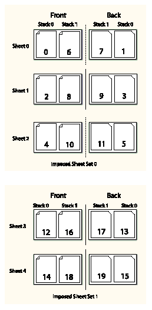
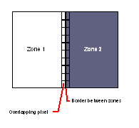
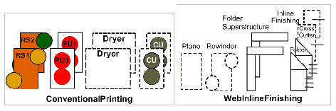
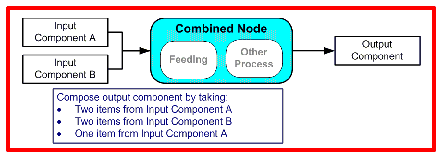
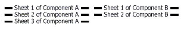
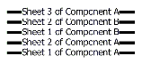
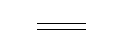
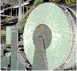

Chapter 6 Processes
The following chapter describes the Processes that are defined in detail for JDF.
6.1 Process Template
Processes are defined by their input and Output Resources, therefore, all relevant Resource information is provided in tables for each Process. Furthermore, although they are not listed for each Process, additional, optional Input Resources as defined in the following table for all Processes defined in this chapter
Note: for the Input Resource Template and Output Resource Template tables below:
- the italicized text describes the actual text that would be in its place in an actual Process definition
- Cardinality in the Name column refers to a cardinality symbol, which is either empty or consists of a symbol, such as “?”. Examples described by the Name column include: “ Media *” and “ Component ( Proof ) ? ”. For further details, see Section 1.3.4, “Specification of Cardinality”.
- The text following a “Note:” in a table field gives further information about the specified table row.
- Each of the first two rows of each table represents zero or more of what it describes. Each of the remaining rows in the Input Resource Template describes an Input Resource that is optional for any Process, even though it doesn’t appear in the Process’s Input Resources table.
|
Information about the Input Resource. Note: the Resource represents any Input Resource. If an optional Resource is not specified in a JDF instance, the JDF Consumer may make its own assumption regarding Attributes and Subelements of the Resource. Specification-defined Attribute defaults cannot be guaranteed. |
|
|
Information about the Input Resource Note: ProcessUsage Attribute of the specified Resource must match the "someValue" value specified in the parentheses. When a Process potentially contains multiple Input Resources of the same type, the value of ProcessUsage distinguishes the Resources. |
|
|
Any number of ApprovalSuccess Resources may be appended to Processes in order to model proofing and verification requirements. This is implied and not specified explicitly in the tables in the following section. For more information on the Approval Process, see Section 6.2.1, “Approval”. |
|
|
Specifies information about the Customer. Prior to JDF 1.3 CustomerInfo was not a Resource, but rather a direct child Element of the JDF Node. |
|
|
Abstract Resource that is a placeholder for any Implementation Resource (examples are Employee or Device ) that is associated with processing this Node. |
|
|
Miscellaneous Consumable Resource s. |
|
|
NodeInfo ? |
Specifies information about the Node. Prior to JDF 1.3 NodeInfo was not a Resource, but rather a direct child Element of the JDF Node. |
|
Any number of PreflightReport Resources may be appended to Processes in order to convey the results of previous preflighting steps. This is implied and not specified explicitly in the tables in the following section. For more information on the Preflight Process, see Section 6.4.26, “Preflight” . |
|
|
Preview * |
Any number of previews may be associated with a Process and used for display purposes. Preview / @PreviewUsage should be ThumbNail or Viewable . Deprecation note: starting with JDF 1.4, a Preview MAY be a member of any Element. See Table 3-1, “Any Element (generic content)”. |
|
Tool * |
|
|
Devices may use counters, called “usage counters”, to track equipment utilization or work performed, such as impressions produced or documents generated. |
6.2 General Processes
6.2.1 Approval
The Approval Process can take place at various steps in a workflow. For example, a Resource (e.g., a printed Sheet or a finished book) is used as the input to be approved, and an ApprovalSuccess (given, for example, by a customer or foreman) is produced. Combining the Approval Process with any other Process can be used to represent a request for a receipt. The Process that follows the Approval Process in the workflow chain will most often require the ApprovalSuccess as Input.
Resources typically have a Status = "Draft" before the Approval . After a successful Approval , Resources have a Status = "Available" and after an unsuccessful Approval , they have a Status = "Rejected" .
|
Resource * |
The Resources to be proofed. The input will most often be a Resource of Class Handling or Quantity . When the Input Resource of an Approval Process is a ByteMap , it is assumed that it will be displayed on a viewing Device |
|
Result of any proofing Process given, for example, by a customer or foreman. Note that ApprovalSuccess Resources are only available on success. |
|
|
Resource ( Accepted ) * |
Represents the Input Resources that have been accepted for further processing by the Approval Process as Output Resources. This is typically used to transfer the Resource Status of "Draft" to "Available" (see also Section 4.3.5.2, “Formal Iterative Processing”). |
|
Resource ( Rejected ) * |
Represents the Input Resources that have been rejected for further processing by the Approval Process as Output Resources. This can be used to define additional processing for rejected Resources. Resource /@ Status should be set to "Rejected" . |
6.2.2 Buffer
The Buffer Process is used to buffer a Resource for a certain time period. This can be buffering of a complete Resource or of a partial Resource, (e.g., in a pipe). The Amount of the input and output of Resources must be equal. Waiting for printed material to dry before finishing is an example of the Buffer Process.
|
The parameters, (e.g., times and locations of the Buffer Process). |
|
|
The Physical Resource s to be buffered. These may be any Resource whose Class is "Consumable" , "Handling" or "Quantity" . |
|
The same Resource after buffering. The Resource must have a Class of "Consumable" , "Handling" or "Quantity" . |
6.2.3 Combine
The Combine Process is used to combine multiple Physical Resource s or logical Resources, (e.g., RunList Resources of the same content to form one Resource). The sum of Amount of the input and output of Resources must be equal. The ordering of the input ResourceLink Elements must be honored.
|
Resource + |
|
Result of combining. The Resource formed as a result of the Combine Process. |
6.2.4 Delivery
This Process can be used to describe the delivery of a Physical Resource to or from a location. This delivery can be internal - meaning within the company - or to an external company or customer. The CustomerInfo Element of the JDF Node can also be used if the delivery to is to be made to only one customer. Note that a delivery receipt can be requested by combining the Delivery Process with an Approval Process.
|
Necessary information about the physical item or items to be delivered is stored here. |
|
|
Resource ? |
Any Resource delivered to a location. This can be a Physical Resource or a Parameter Resource that is delivered electronically. In JDF 1.2 and beyond the delivered Resources are defined as refelements in Elements of DeliveryParams / Drop / DropItem . |
|
Resource + |
Any Resources delivered from a location. These must be Physical Resource s. |
6.2.5 ManualLabor
This Process can be used to describe any Process where Resources are handled manually. The ManualLabor Process is designed to monitor any type of non-automated labor from an MIS system.
|
Resource * |
|
|
Details on the ManualLabor Process. |
|
Resource * |
The Resources that were created by manual work. In general these will be Component Resources, but Handling Resource s may also be processed manually. If no Output Resource is specified, the ManualLabor Process describes incidental work. Modification note: starting with JDF 1.4, multiple Resources are allowed. |
6.2.6 Ordering
This Process can be used to describe the Ordering (requisition) of a Resource Element. Orders can be placed internally, (i.e., within the company or externally).
|
Necessary information about the items to be ordered, (e.g., the supplier address, item quantity or unit type). |
|
Resource + |
All kinds of Physical Resource s can be ordered. |
6.2.7 Packing
See Section P.3.1, “Packing” for details of this deprecated Process.
6.2.8 QualityControl
This Process defines the setup and frequency of quality controls for a Process. QualityControl is generally performed on Component Resources produced as intermediate or final output of a Process.
|
The Resource to be quality controlled. In general this will be a Component Resource. |
|
|
Detailed definition of the QualityControl Process. |
|
The Resource after QualityControl is applied. Note that this Resource will generally be Partitioned by Condition to track the amount of accepted and rejected Resources. This Resource should reference the QualityControlResult Output Resource |
6.2.9 ResourceDefinition
This Process can be used to describe the interactive or automated Process of defining Resources such as set-up information. This Process creates Output Resources or modifies Input Resources of the same type as the Output Resources. The ResourceDefinition Process is designed to monitor interactive work such as creating imposition templates. It can also be used to model a hot folder Process that accepts Resources from outside of a JDF based workflow.
|
Resource * |
|
|
Resource + |
6.2.10 Split
This Process is used for splitting one physical or logical Resource into multiple physical or logical Resources containing the same content as the original. The sum of Amount of the input and output of Resources must be equal.
|
Resource + |
6.2.11 Verification
The Verification Process is used to confirm that a Process has been completely executed. In the case of variable data printing in which every document is unique and validated individually, database access is required . Verification in this situation can involve scanning the physical Sheet and interpreting a bar code or alphanumeric characters. The decoded data can then be either recorded in a database to be later cross referenced with a verification list, or cross referenced and validated immediately in real time.
Verification differs from QualityControl in that Verification verifies the existence of a given set of Resources, whereas QualityControl verifies that the existing Resources fulfill certain quality criteria.
|
DBSchema ? |
|
|
Database link that defines the database that contains cross-reference data. |
|
|
Identifies the position and type of data for an automated, OCR - based verification Process. |
|
|
Resource ? |
The Resource to be verified. The input will most often be a Resource with Class = "Quantity" , e.g., Component or Class = "Parameter" , e.g. RunList . |
|
Database link where the verification data is to be recorded. |
|
|
Resource ? |
The Resource after verification. Most often the Resource will not be modified by Verification . It has been added here to allow modeling of Verification in a Combined Processes. |
6.3 Product Intent Descriptions
Product Intent is also described as a JDF Node. The following table defines the list of JDF Intent Resource s used to describe Product Intent.
|
Components that are partial products of the product described by this Node. If input Component Resources are specified, at least one of BindingIntent or InsertingIntent is required . |
|
|
This Resource specifies the prepress art delivery intent for a JDF Job. |
|
|
This Resource specifies the type of ink to be used for a JDF Job. |
|
|
Summarizes the options that describe pickup or delivery time and location of the Physical Resource s of a Job. |
|
|
This Resource specifies the embossing and/or foil stamping intent for a JDF Job. |
|
|
This Resource specifies the fold intent for a JDF Job using information that identifies the number of folds, the height and width of the folds, and the folding catalog number. |
|
|
This Resource specifies the holemaking intent for a JDF Job. |
|
|
This Resource specifies the placing or inserting of one component within another, using information that identifies page location, position and attachment method. |
|
|
This Resource specifies the laminating intent for a JDF Job using information that identifies whether or not the product is laminated. |
|
|
This Resource records the size of the finished pages for the product component. |
|
|
This Resource describes the media to be used for the product component. |
|
|
This Resource describes the parameters of stamping or applying variable marks in order to produce unique components, for items such as lottery notes or currency. |
|
|
This Resource specifies the packaging intent for a JDF Job, using information that identifies the type of package, the wrapping used and the shape of the package. |
|
|
This Resource specifies the manufacturing intent and considerations for a JDF Job using information that identifies the desired result or specified manufacturing path. |
|
|
This Resource specifies the prepress proofing intent for a JDF Job, using information that identifies the type, quality, brand name and overlay of the proof. |
|
|
This Resource specifies publishing metadata that are of general interest for prepress, press and postpress. The data include details on the general structure of product being published. |
|
|
This Resource specifies the screening intent parameters desired for a JDF Job. |
|
|
This Resource specifies form and line cutting for a JDF Job. |
|
|
This Resource records the size of the finished pages for the product component. SizeIntent has been deprecated in JDF 1.1. All contents have been moved to LayoutIntent . |
6.4 Prepress Processes
6.4.1 AssetListCreation
The purpose of this Process is to provide a listing of all assets and their dependent assets that are required in order to use the input assets. This Process analyzes the input RunList to find dependent assets to provides a complete listing of files in the output RunList . AssetListCreation does not package, encode or compress the list of files.
|
List of assets used to create a listing of dependent assets. |
|
|
Parameters of the AssetListCreation Process |
|
A listing of all assets that the assets listed in the input RunList are dependent on including the input assets. The dependent assets are to be inserted into the output RunList as RunList / LayoutElement / Dependencies / LayoutElement . |
6.4.2 Bending
The Bending Device consumes a printing plate and bends and/or punches it. In contrast to commercial printing, for newspaper printing this Process is not integrated into the ImageSetting Process. In JDF 1.3 and above ImageSetting does not imply Bending . An inline plate puncher should be modelled as a Combined Process consisting of ImageSetting and Bending Processes.
|
List of assets used to create a listing of dependent assets. |
|
|
The ExposedMedia Resource to be bent/punched. |
|
|
Media ? |
In a newspaper environment, Dummy forms might be needed. In this case, a Media with MediaType = "Plate" serves as an Input Resource. |
6.4.3 ColorCorrection
ColorCorrection is the Process of modifying the specification of colors in documents to achieve some desired visual result. The Process might be performed to ensure consistent colors across multiple files of a Job or to achieve a specific design intent, (e.g., “brighten the image up a little”).
ColorCorrection is distinct from ColorSpaceConversion , which is the process of changing how the colors specified in the Job will be produced on paper. Rather, ColorCorrection is the process of modifying the desired result, whatever the specified color space might be.
The ColorCorrection Process may be part of a Combined Process with the ColorSpaceConversion Process, in which case the source and destination profiles used by the ColorSpaceConversion Process would be supplied from ColorSpaceConversionParams . Either the direct Adjustment Attribute or the ICC profile Attribute ColorCorrectionOp / FileSpec with ResourceUsage = "AbstractProfile" can be used in this scenario to apply color corrections in the Device independent ICC Profile Connection Space interpreted from the ICC source profile before the ICC destination profile is applied.
Alternatively, a ColorCorrection Process may occur after a ColorSpaceConversion Process. In this scenario only the ColorCorrectionOp / FileSpec with ResourceUsage = "DeviceLinkProfile" supplied in ColorCorrectionOp is used.
|
Parameters of the ColorCorrection Process |
|
6.4.4 ColorSpaceConversion
ColorSpaceConversion , as the name implies, is the process of converting all colors used in the Job to a known color space. There are two ways in which a Controller can use this Process to accomplish the color conversion. It can simply order the colors to be converted by the Device assigned to the task, or it can request that the Process simply tag the input data for eventual conversion. Additionally, the Process can remove all tags from the content.
The parameters of this Resource provide the ability to selectively control the conversion or tagging of raster data or graphical objects based on object class and/or incoming color space.
Like all other color manipulation supported in JDF, the color conversion controls are based on the use of ICC profiles. While the assumed characterization of input data can take many forms, each can internally be represented as an ICC profile. In order to perform the transformations, input profiles must be paired with the identified final target Device profile to create the transformation.
In order to avoid the loss of black color fidelity resulting from the transformation from a four-component CMYK to a three-component interchange space, the Agent may select a DeviceLink 1 profile as the assumed color space characterization. In these instances, the final target profile is ignored. Since there is no algorithmic way to determine that the output characterization in a Device link profile is equivalent to another profile, some of the responsibility to select a sensible combination falls on the Agent or end user.
|
Identifies the assumed color model for the Job. The ColorantControl Resource can be modified by a ColorSpaceConversion Process. |
|
|
List of pages, Sheets or byte maps on which the selected operation has been performed. |
6.4.5 ContactCopying
ContactCopying is the Process of making an analog copy of a film onto a another film or plate. It includes FilmToPlateCopying as defined in JDF 1.0.
|
Controls the physical and chemical specifics of the media development process. |
|
|
Area coverage correction and coordinate transformations of the device. |
6.4.6 ContoneCalibration
This Process specifies the process of contone calibration. It consumes contone raster data such as that output from an Interpreting and Rendering Process. It produces contone raster data which has been calibrated to a press using a well defined screening Process.
|
Ordered list of rasterized byte maps representing pages or surfaces. |
6.4.7 CylinderLayoutPreparation
CylinderLayoutPreparation specifies where to mount a single form in a newspaper-Web Press. This information might be needed by printers as human-readable text on the surface of the form. Usually, the information is shown in the non-printable area of it.
The required color information for each plate layout is addressed from Layout / ContentObject /@ Ord. The Attribute points to RunList ( Document ). RunList /@ PageListIndex points to detailed PageData , including individual color information.
|
Set of parameters for CylinderLayoutPreparation . |
|
|
Definition of the Layout of the individual plates. The resulting CylinderLayout references plate layouts. |
|
|
The document RunList . |
|
CylinderLayout specifies where to mount a single form in a newspaper-Web Press. If requested by the printer, this information can be indicated as human-readable text on the surface of the physical plate. |
6.4.8 DBDocTemplateLayout
This Process specifies the creation of a master document template that is used as an Input Resource for the DBTemplateMerging Process. It is similar to the LayoutElementProduction Process except that the output is a set of document templates. Document template are represented in JDF as LayoutElement Resources with Template = "true" .
|
The document template is a LayoutElement with links to a database. These links are proprietary to the linking application and are not described in JDF. The Template Attribute must be true . |
6.4.9 DBTemplateMerging
This Process specifies the creation of personalized PDL Instance Documents by combining a document template and instance data records from a database. The resulting Instance Documents will generally be consumed by an Imposition , a RIPing and ultimately, by a DigitalPrinting Process.
|
Document template page element with internal links to a database. |
|
Page element without links to a database. This Element usually contains a printable LayoutElement Resource such as PPML, PDF or even plain ASCII. |
6.4.10 DieDesign
This Process describes the design of a die tool set starting from a DieLayout .
6.4.11 DieLayoutProduction
This process describes the layout of one or more structural designs for a given Media . The output of this process is a DieLayout Resource, describing a tool set for the die cutter machine. The DieLayoutProduction Process can be performed by a human operator using a CAD application. In some cases it can be an automated Process. The Process can be run in estimation mode in which case multiple solutions are returned that can then be used as input of a cost estimation module to determine the optimal layout.
|
ShapeDef + |
ShapeDef Resources describing the different 1-up structural designs to be stepped and repeated on the Media . |
|
The parameters for the DieLayoutProduction . |
|
A Resource describing the die cutter tool set. When the process is run in estimation mode, multiple alternative DieLayout Elements are returned, otherwise a single DieLayout is generated. |
Example 6-1: DieLayoutProduction: Single Shape and Two Sheet Sizes
Example of DieLayoutProduction of a single shape on 2 stock sheet sizes
<? xml version = "1.0" encoding = "UTF-8" ?>
<!-- DieLayoutProduction Sample
Single Shape is repeated on a range of alternative sheet sizes.
< JDF xmlns = "http://www.CIP4.org/JDFSchema_1_1" ID = "n001"
Type = "DieLayoutProduction" Status = "Waiting" JobPartID = "ID234"
DescriptiveName = "Single shape versus a set of sheet sizes"
< ShapeDef Class = "Parameter" ID = "Shape1Up" Status = "Available" >
< FileSpec URL = "file://myserver/myshare/olive.dd3" />
<!-- Layout can chose from 2 stock sheet sizes. Nesting with 2nd row
rotated and secondary gutters. Rotate against grain/flute
< DieLayoutProductionParams Class = "Parameter" ID = "LayParam"
< ConvertingConfig SheetWidth = "2834.64 ~ 2834.64"
SheetHeight = "2267.72 ~ 2267.72" />
< ConvertingConfig SheetWidth = "3401.57 ~ 3401.57"
SheetHeight = "2834.64 ~ 2834.64" />
< RepeatDesc GutterY = "0.0" GutterY2 = "14.17" AllowRotate = "false"
LayoutStyle = "Reverse2ndRow" />
</ DieLayoutProductionParams >
<!-- The layout with minimum waste will be returned as the final result. -->
< DieLayout Class = "Parameter" ID = "DieLay" Status = "Unavailable" />
< ShapeDefLink rRef = "Shape1Up" Usage = "Input" />
< DieLayoutProductionParamsLink rRef = "LayParam" Usage = "Input" />
Example 6-2: DieLayoutProduction: Single Shape and Range of Sheet Sizes
Example of DieLayoutProduction of a single shape on a range of sheet sizes. The sheet sizes have defined minimum and maximum width and height. The layout is optimized for a particular order quantity
<?xml version="1.0" encoding="UTF-8"?>
<!-- DieLayoutProduction Sample
Single Shape is repeated on a continuous range of sheet sizes. -->
< JDF xmlns = "http://www.CIP4.org/JDFSchema_1_1" ID = "n001"
Type = "DieLayoutProduction" Status = "Waiting"
DescriptiveName = "Single shape versus a set of sheet sizes"
JobPartID = "ID400" Version = "1.4" >
< ShapeDef Class = "Parameter" ID= "Shape1Up" Status = "Available" >
< FileSpec URL = "file://myserver/myshare/olive.dd3" />
<!-- Layout can choose sheet sizes between 1200mm-1000mm wide and
1000mm-800mm high. The layout will be optimized for order quantities
of 1 million boxes. Gutters are 5mm and cross flute/grain rotation
< DieLayoutProductionParams Class = "Parameter" ID = "LayParam"
< ConvertingConfig SheetWidth = "3401.57 ~ 2834.64"
SheetHeight = "2834.64 ~ 2267.72" />
< RepeatDesc OrderQuantity = "1000000" GutterX = "14.17" GutterY = "14.17"
</ DieLayoutProductionParams >
<!-- The layout with minimum waste will be returned as the
< DieLayout Class = "Parameter" ID = "DieLay" Status = "Unavailable" />
< ShapeDefLink rRef = "Shape1Up" Usage = "Input" />
< DieLayoutProductionParamsLink rRef = "LayParam" Usage = "Input" />
Example 6-3: DieLayoutProduction: Two Shapes and Range of Sheet Sizes
Example of DieLayoutProduction of 2 shapes on a range of sheet sizes. The sheet sizes have defined minimum and maximum width and height. The layout is optimized for a particular order quantity of 2 boxes.
<? xml version = "1.0" encoding = "UTF-8" ?>
<!-- DieLayoutProduction Sample
2 Shapes is repeated on a continuous range of sheet sizes.
< JDF xmlns = "http://www.CIP4.org/JDFSchema_1_1" ID = "n001"
DescriptiveName = "Single shape versus a set of sheet sizes"
< ShapeDef Class = "Parameter" ID = "Shape1Up" Status = "Available" >
< FileSpec URL = "file://myserver/myshare/beef.dd3" />
< ShapeDef Class = "Parameter" ID = "Shape1Up2" Status = "Available" >
< FileSpec URL = "file://myserver/myshare/chicken.dd3" />
<!-- Layout can chose sheetsizes between 1200mm-1000mm wide and
1000mm-800mm high. Layout is optimized for an order
quantity of 300k boxes for beef and 700k boxes for chicken.
Gutters are 5mm and cross flute/grain rotation is not allowed.
< DieLayoutProductionParams Class = "Parameter" ID = "LayParam"
< ConvertingConfig SheetWidth = "3401.57 ~ 2834.64"
SheetHeight = "2834.64 ~ 2267.72" />
< RepeatDesc OrderQuantity = "300000" GutterX = "14.17" GutterY = "14.17"
< RepeatDesc OrderQuantity = "700000" GutterX = "14.17" GutterY = "14.17"
</ DieLayoutProductionParams >
<!-- The layout with minimum waste will be returned as the final
< DieLayout Class = "Parameter" ID = "DieLay" Status = "Unavailable" />
< ShapeDefLink rRef = "Shape1Up" Usage = "Input" />
< ShapeDefLink rRef = "Shape1Up2" Usage = "Input" />
< DieLayoutProductionParamsLink rRef = "LayParam" Usage = "Input" />
< DieLayoutLink rRef = "DieLay" Usage = "Output" />
6.4.12 DigitalDelivery
This Process specifies the delivery of digital assets in any stage of the flow. It could be images, documents, layout, text files, ready to print raster files or any other file type. When ArtDeliveryIntent / ArtDelivery /@ ArtDeliveryType is "DigitalNetwork" or "DigitalFile"2 the corresponding Process will be DigitalDelivery unless ArtDeliveryIntent /@Method = "local" .
It is not necessary to use the DigitalDelivery Process to describe informal delivery of files during the workflow although DigitalDelivery can be used for asset collection purposes, (i.e., defining how an input RunList will be collected in the output RunList describing the packing containers of compression or encoding). See example in Appendix N, “Examples” .
|
Parameter specifying the artwork files delivery characteristics. |
|
|
RunList * |
|
RunList + |
The list of digital files which were actually delivered to the destination. |
6.4.13 FilmToPlateCopying
FilmToPlateCopying has been replaced by the more generic ContactCopying . See Section P.3.2, “FilmToPlateCopying” for details of this deprecated Process.
6.4.14 FormatConversion
The FormatConversion Process controls the conversion from ByteMap to an external file raster format. The FormatConversionParams Resource defines the type and parameters to control the output file specified by the output RunList .
|
Parameters that control the operation of the Process that produces the resulting image file pages. |
|
|
List of ByteMap Resources to be converted to raster file format. |
|
This Resource identifies the location of the resulting raster files. If the FileSpec /@MimeType of this Resource is specified, then it must match the input FormatConversionParams / @MimeType . If FileSpec /@MimeType is not specified, then FormatConversionParams / @MimeType is used to update the Output Resource. |
6.4.15 ImageReplacement
This Process provides a mechanism for manipulating documents that contain referenced image data. It allows for the “fattening” of files that simply contain a reference to external data or contain a low resolution proxy. Additionally, the Resource can be specified so that this Process generates proxy images from referenced data. ImageReplacement is intentionally neutral of the conventions used to identify the externally referenced image data.
|
List of page contents with images that have been manipulated as indicated by the ImageReplacementParams Resource. |
6.4.16 ImageSetting
The ImageSetting Process is executed by an imagesetter or platesetter that images a bitmap onto the film or plate media. The ImageSetting Process can also be used to describe hard copy proofing, (see Section 6.2.1, “Approval” .)
|
The ColorantControl Resources that define the ordering and usage of inks during marking on the imagesetter. |
|
|
Controls the physical and chemical specifics of the media development process. |
|
|
When imaging to reusable media, ExposedMedia may also be used as input to ImageSetting . Constraint: exactly one of Media or ExposedMedia must be specified. |
|
|
Media ? |
Constraint: exactly one of Media or ExposedMedia must be specified. |
|
Identifies the set of bitmaps to image. may contain bytemaps or images. |
|
|
Area coverage correction and coordinate transformations of the Device. |
6.4.17 Imposition
Modification note: starting with JDF 1.4, automated imposition is added.
The Imposition Process is responsible for combining pages of input graphical content onto surfaces whose dimensions are reflective of the physical output media. Static or dynamic printer's marks can be added to the surface in order to facilitate various aspects of the production process. Among other things, these marks are used for press alignment, color calibration, job identification and as guides for cutting and folding.
Note that the Imposition Process specifies the task of combining pages and marks on sheets. The task of setting up the parameters needed for Imposition (e.g., creating the Layout Resource) is defined either by LayoutPreparation , Stripping or by the generic ResourceDefinition Process.
|
A Layout Resource that indicates how the content pages from the Document RunList and marks from the Marks RunList (see below) are combined onto imposed surfaces. |
|
|
RunList ( Document ) |
Structured list of incoming page contents which is transformed to produce the imposed surface images. |
|
RunList ( Marks ) ? |
Structured list of incoming marks. These are typically printer’s marks such as fold marks, cut marks, punch marks or color bars. |
|
Structured list of imposed surfaces. The ElementType of the LayoutElement Resource must be "Surface" . Typically the output RunList will be Partitioned by PartIDKeys = "SheetName Side Separation" . If the Imposition Process is executed before RIPing , this will generally be consumed by an Interpreting Process. In the case of post-RIP Imposition , it will be consumed by DigitalPrinting or ImageSetting . |
There are two mechanisms provided for controlling the flow of page images onto sheet surfaces:
The default mechanism is for non-automated (e.g. fully-specified) Imposition , which originally derived from Layout in PJTF. Fully-specified imposition explicitly identifies all page content for each sheet imaged and references these pages by means of the order in which they are defined in the input RunList ( Document ) Resource. Static printer's marks are referenced in a similar fashion from the input RunList (Marks) Resource.
Setting the Automated attribute of the Layout Resource to "true" activates a template approach to imposition and relies upon the full hierarchy structure of the document (as specified by the RunList ( Document ) and referenced Structured PDL data) to specify the page content to be imposed.
In JDF, there is a single Layout Resource definition. Its structure is broad enough to encompass the needs of both fully specified and template-driven imposition. When described fully ( Automated = "false" ), the Layout Resource Partition structure defines the imposition to take place. The highest level of each Partition defines a signature. The children of each of the signatures in turn specifies an array of sheets, and each sheet MAY have up to two surfaces (Front and/or Back), on which the page images and any printer's marks are to be placed using PlacedObject Elements. A sheet that specifies no surface content MUST be interpreted as blank. Pages that are to be printed MUST be placed onto surfaces using ContentObject Subelements which explicitly identify the page (Typically done using the ContentObject /@ Ord Attribute which specifies an index into the document RunList ). Thus, the Layout Partition hierarchy MUST explicitly specify which pages are to be imaged onto each surface.
For JDF 1.3, automated imposition was originally defined such that Layout Resource Partitions specified a single signature of sheet(s) upon which page content was to be imposed. The sequence of pages to be imaged via automated imposition was defined by the Document RunList . The pages were pulled from this sequence as needed in order to satisfy the ContentObject Elements defined for each sheet surface in the signature of the Layout Resource. The signature was repeated as necessary until all pages available in the Document RunList had been used.
Note that the XML order in which the Partitions of the Layout Resource are defined is significant for both automated and non-automated imposition and defines the order in which the imposition engine processes the RunList ( Document ).
6.4.17.1 Glossary for Automated Imposition
This table below introduces terms and concepts necessary for understanding automated imposition processing.
|
When processing an Imposition Template, the imposition engine maintains an internal Base Index into the Page Pool being processed. That Base Index is added to the ContentObject /@ Ord value, resulting in an index into the Page Pool for referencing the page to be placed, and is updated for each Imposition Template iteration. Both positive and negative base indices are maintained for use when ContentObject /@ Ord has either a negative or positive value. For an example, see Example N-31, “Algorithm for Processing an Imposition Template”. |
|
|
Same as Base Index. |
|
|
Describes a single set of sheet definitions generated by the imposition engine containing imposed content. Note that this may represent a precut set of sheets in a cut-and-stack workflow (where the maximum number of sheets in the Imposed Sheet Set is defined by Layout / LogicalStackParams /@ MaxStackDepth ), or a collect when no Logical Stack s are defined. |
|
|
A first-level branch of a Partitioned Layout Resource having Automated = "true" that describes a single set of sheets with a common imposition layout that accommodates very specific production characteristics. A single Layout Resource defines a collection of one or more Imposition Templates . |
|
|
The imposition engine treats each immediate child Node of a set in a Structured PDL as an Instance Document . This is used as the basis for generating EndOfDocument breaks in the resulting RunList ( Surfaces ), and for processing RunList /@ DocCopies Attributes (see Section 7.2.160, “RunList”). If a set has only pages as its children, then a single Instance Document is assumed to exist. |
|
|
One or more pages placed onto a sheet definition within a Logical Stack (i.e a sheet definition within a Logical Stack). |
|
|
When Layout / LogicalStackParams /@ MaxStackDepth is specified in the root of the Layout Resource, then the imposition engine is configured for imposition onto multiple Logical Stacks . These stacks are described through the use of adding Layout / PlacedObject /@ LogicalStackOrd to stack-specific descriptions for each placed object. For more information, see Section 6.4.17.4.1, “Using Logical Stacks”. For example usage, see Example N-34, “Booklet Using Automated Imposition”. |
|
|
The set of Logical Stack s described by an Imposed Sheet Set. |
|
|
A Page Pool refers to a delimited sequence of pages defined within the RunList ( Document ) input to the Imposition Process. A Page Pool MAY encompass all pages of the RunList ( Document ) as in the case of Unstructured PDL s . In the case of Structured PDL s , a Page Pool is defined to be that set of pages represented by a leaf node of the document structure. For example, a brochure which has a sub-structure of Cover and Body has two leaf nodes, Cover and Body, respectively. If Body were further divided into Chapter sections, then the leaf nodes of the Brochure would be the Cover and each Body Chapter. LayoutElement /@ ElementType may be used to demote an already Structured PDL to be treated as an Unstructured PDL. Examples of Structured PDL formats include PPML, PPML/VDX, and ISO 16612-2 PDF/VT. Imposition Template s select Page Pools to be processed based on their Partition Keys whose values are derived from metadata present in the PDL data (e.g. Layout Partitioned by DocTags = "Letter" would process all Page Pools of the current Set whose metadata derived Partition Key DocTags matches "Letter" ). See below for more detail. It is important to note that the pages in a Page Pool MUST be presented to the imposition engine in a well defined order known to the Layout Resource creator (typically reader order) in order for them to be processed correctly. |
|
|
A Page Pool List refers to a sequence of one or more Page Pool s (contiguous or disjoint in the RunList ( Document )) aggregated together and treated as a single Page Pool for processing by a selected Imposition Template. For example, if a Page Pool List is constructed from the Page Pool s : Chapter1, Chapter2, and Chapter4 as defined in an input RunList ( Document ), then the aggregate result is a single pool of pages consisting of the pages from Chapter1, Chapter2 and Chapter4. The order of the pages of the Page Pool List MUST be processed in the order in which the Page Pool s are defined in the RunList ( Document ). The boundaries between Page Pool s in a Page Pool List are implicitly maintained for use by the imposition processor for making page level sheet surface mapping decisions during processing (e.g. specifying a right side facing pages start at the beginning of each chapter). Page Pool s are aggregated into Page Pool Lists through the use of the Layout /@ BaseOrdReset Attribute. If BaseOrdReset = "PagePoolList" then all Page Pool s processed by the Imposition Template are aggregated. If BaseOrdReset = "PagePool" , then each Page Pool is processed separately. It is important to note that the pages in a Page Pool List MUST be presented to the imposition engine in a well defined order known to the Layout Resource creator (typically reader order) in order for them to be processed correctly. |
|
|
A PDL interface that hides details of a particular PDL and syntax, etc. from the imposition engine itself. Its role is to present the structure of the PDL and pools of pages within the PDL structure to the imposition engine in a PDL independent way. |
|
|
A branch of an Imposition Template that describes the imposition to be performed for a sheet. Sheet Definition s for automated imposition MUST be partitioned by SheetName and Side . |
|
|
A Structured PDL defines sequences of groupings of pages. These groupings may be as simple as specifying the set of pages belonging to a chapter or cover of a booklet where such a group is a Page Pool. In the case of Variable Document Printing (VDP) Structured PDL s , there are often multiple sets of content where typically a set instance comprises the content to be delivered to a single recipient. Each set has one or more documents, and documents may be further subdivided into subdocuments in hierarchical fashion. The imposition engine processes each set individually in the sequence specified in the interpretation specified by the RunList that references the Structured PDL data file. It is the responsibility of the specification of the Structured PDL data and its PDL Processor to identify the Set-level (e.g. recipient record level) structural context to the imposition engine. A Structured PDL format suitable for VDP printing using JDF must supply its own definition for document structure either in its data or in a specification for the PDL. |
|
|
An Unstructured PDL is a content file consisting of a single set of one or more pages. Typically such a PDL file is considered to be a single document and a single Layout Imposition Template would be applied to the entire set of pages. When a JDF imposes structure on such a file either using direct @ Page indices or a Partitioned RunList pointing to different page ranges of the file using EndOfSet , EndOfDocument Attributes, then the imposition engine will treat the input RunList Resource as a Structured PDL. |
|
|
Various PDL formats provide for the definition of key/value pairs within the PDL that MAY be treated as metadata for the purpose of Process parameterization. For example, the metadata key/value pairs specified in the PDL data may identify the type of finished document using DocumentType = "PostCard" or "Booklet" , which would then affect the selection of which Imposition Template is to be applied. The Imposition Process makes use of metadata to make decisions as to which Page Pool s should be processed through an Imposition Template. These decisions are performed by comparing the explicit Partition Key settings for each Imposition Template to the Partition Key/value settings mapped from the PDL for each Page Pool in the current set, and each matching Page Pool is processed through the corresponding Imposition Template(s). Within an Imposition Template, metadata associated with individual pages MAY also be used to parameterize dynamic mark and slug-line content generation (see example below). Refer to the RunList / MetadataMap Element definition for information on how to specify the mapping of PDL specified metadata values for use by JDF (e.g. using Partition Keys or GeneralID keys). The PDL Processor MUST make use of the RunList / MetadataMap to generate Partition Keys, GeneralID and other values during the course of imposition processing. These values must be regenerated as necessary, as the metadata key/value pairs in the PDL change based on which portion of the PDL is being processed. |
|
|
Document Major Processing Order refers to the scenario wherein all instances of a given document class (across all sets to be processed) must be produced before starting processing for the next document class. For instance, the production requirements may state that all brochures must be produced for each set, followed by all cover letters and then all postcards. This processing order is an example of Document Major. |
|
|
Set Major Processing Order refers to the scenario when all documents of a set instance are produced before starting on the next set instance; this is the typical processing order for most VDP applications. |
6.4.17.2 Variables for Automated Imposition
The imposition engine maintains a set of locally scoped variables that may be referenced during imposition processing. The values of these variables reflect the current context of processing during execution of the Imposition process. These variables include those described in Section I, “Generating strings with Format and Template”, as well as those described in bulleted items below. All variables below are integer variables.
- CollectIndex represents a zero based index of the current collect of sheets being generated within an automated Imposition Template. May be greater than zero if Layout /@ MaxCollect is specified and is greater than 1.
- CollectSheetIndex is a zero-based index of the current sheet of the current collect being generated within an automated Imposition Template.
- ImposedSheetSetIndex is the 0-based Imposed Sheet Set index.
- PoolSheetIndex is a zero-based index of the current sheet generated from the current page pool or page pool list within an automated Imposition Template. The value of this variable is independent of the number of collects generated by the same automated Imposition Template.
- SheetCount is the current number of sheets generated during the processing of the automated Layout Resource. At the beginning of processing of the Layout Resource, the value of this variable is set to zero. The value of this variable may be reset to zero in later Layout Partitions using the Layout /@ SheetCountReset Attribute.
- SubDocIndex n where n represents any hierarchical structure levels below the level of the current document present in the Structured PDL data to be processed. For example, SubDocIndex0 might represent a collection of chapters in a brochure where its containing parent is at the document level ( DocIndex is used to indicate the position (index) of the document in its containing Set).
- TotalCollects is the total number of collects generated by an automated Imposition Template from the current page pool or page pool list being processed.
- TotalImposedSheetSets is the total number of Imposed Sheet Set s defined for the job.
- TotalSets is the total number of recipient sets generated for the Job. Note that in cases where it is used before the end of content imposition, it is necessary for the imposition processor to count the number of sets in the PDL content.
- TotalSheetCount is the total number of sheets generated during the processing of the automated Layout Resource. The value of this variable may be recalculated in later Layout Partitions using the Layout /@ SheetCountReset Attribute.
- TotalSheetsInCollect is the total number of sheets that make up the current collect.
- TotalSheetsInPool is the total number of sheets generated from the current page pool or page pool list within an automated Imposition Template.
The above variables MAY be used for controlling the activation of printer's marks (See Layout / MarkObject / MarkActivation ). For example:
Example 6-4: Automated Imposition: MarkObject
This example causes a slug line to be imaged on the bottom center of the first sheet of the set of sheets comprising a signature instance. Here are the details. For MarkActivation /@ Context , its value of "CollectIndex" specifies that the value of CollectIndex is the index used with MarkActivation /@ Index. For MarkActivation /@ Index , its value of 0 specifies that the sheet receive the specified slug line if the value of CollectIndex is 0 (i.e. if it is first sheet of the signature instance). Note: if @ Index were "1 4 6" , then the slug line would go on the second, fifth and seventh sheets.
<JDF xmlns="http://www.CIP4.org/JDFSchema_1_1" ID="A1" Status="Waiting"
Type="ProcessGroup" JobPartID="ID300" Version="1.4">
<Layout Class="Parameter" ID="L1" Status="Available">
< MarkObject Anchor = "BottomCenter" CTM = "1 0 0 1 0 0" >
< DeviceMark FontSize = "8" Font = "MySlugLineFont" />
< JobField JobFormat = "Gender=%s" JobTemplate = "GeneralID:Gender" />
< RefAnchor Anchor = "BottomCenter" AnchorType = "Sibling" rRef = "l000006" />
< MarkActivation Context = "CollectIndex" Index = "0" />
<LayoutLink Usage="Input" rRef="L1"/>
6.4.17.3 Execution Model for Automated Imposition
The Imposition Process transforms the sequences of pages contained within a Page Pool or Page Pool List to a specific sequence of imposed sheet surfaces. The Imposition Template s and the order of the Imposition Templates defined by the Layout Resource explicitly define the page to sheet surface mapping transformation applied by the imposition engine.
The pseudo-code below describes the processing performed by the imposition engine at a high level:
For each Set in the order specified in the input RunList ( Document )
For each Imposition Template
For each Page Pool in the Set
If the Partition Key conditions for the Imposition Template are satisfied
then process the Page Pool through the Imposition Template.
Thus, each Layout Resource Imposition Template is processed in the XML structure order specified. Every Page Pool belonging to the current set is then evaluated against the Partition Keys specified for that Imposition Template to determine if it is to be processed by that Imposition Template.
Since each Page Pool is evaluated for each Imposition Template, it is possible to reuse the same Page Pool with multiple Imposition Template s . For an example algorithm for processing Page Pool s through an Imposition Template, see Example N-31, “Algorithm for Processing an Imposition Template”.
The RunList Resource output from the Imposition Process represents a sequence of imposed sheet surfaces where each surface may be represented either by pointing to PDL content where all the input pages are imposed onto single PDL pages, or, when used with a Combined Process may refer to the page set along with imposition instructions to the interpreter using an exchange Resource. The structure of the Layout Resource affects the Partition Keys conserved by its output RunList (and its referenced content), by conserving all Partition Keys specified in the Layout along with generating all of the appropriate Partition Keys, such as SetIndex , DocIndex , SheetIndex . The output RunList can be viewed conceptually as a collection of sheet surface pairings (front and back) that conserves information about which Layout Imposition Template and Page Pool metadata that was in scope at the time the sheets were generated.
Note: DocIndex is always generated even if every set contains only a single document; a set that contains only pages is treated as a set with a single document.
Example 6-5: Imposition Template: Layout
Thus, if the Imposition Template ( Layout ) in this example is applied, then the resulting RunList Resource conceptually conserves the following Partition Keys: SetIndex , SheetIndex , DocTags , DocIndex , SheetName and Side along with any other in-scope Partition Keys.
Note that in this example, SetIndex and DocIndex are conserved by setting EndOfSet and EndOfDocument respectively in the output RunList ( Surfaces ). In a Layout that defines Logical Stack s containing mutiple documents or sets within Imposed Sheet Set s , SetIndex and DocIndex would need to be conserved by explicitly setting the value of the SetIndex and DocIndex Partition Keys. The RunList is expected to be partitioned by Run , where each Run represents one or more Sheets, each having at least one surface either implied by RunList /@ SheetSides , or explicitly Partitioned by Side .
<JDF xmlns="http://www.CIP4.org/JDFSchema_1_1" ID="A1" Status="Waiting"
Type="ProcessGroup" JobPartID="ID300" Version="1.4">
< Layout Class = "Parameter" ID = "L1" Status = "Available"
PartIDKeys = "DocTags SheetName Side" Automated = "true" >
< Layout DocTags = "CoverLetter" >
< Layout SheetName = "CoverLetterSheets" >
< ContentObject Ord = "0" CTM = "1 0 0 1 0 0" />
< Layout DocTags = "Booklet" >
< Layout SheetName = "BookletSheets" >
< ContentObject Ord = "0" CTM = "1 0 0 1 0 0" />
< ContentObject Ord = "-1" CTM = "1 0 0 1 0 0" />
< ContentObject Ord = "1" CTM = "1 0 0 1 0 0" />
< ContentObject Ord = "-2" CTM = "1 0 0 1 0 0" />
Example 6-6: Output RunList (Surfaces)
<? xml version = "1.0" encoding = "UTF-8" ?>
< JDF xmlns = "http://www.CIP4.org/JDFSchema_1_1" ID="n_000000"
JobID = "JobID" JobPartID = "n_000000" Status = "Waiting" Type = "Combined"
Types = "Interpreting Rendering DigitalPrinting Stitching" Version = "1.4"
xmlns:xsi = "http://www.w3.org/2001/XMLSchema-instance" xsi:type = "Combined" >
< Created ID = "a_000001" TimeStamp = "2008-10-23T11:14:03+02:00" />
<!--Generated by the CIP4 Java open source JDF Library version :
CIP4 JDF Writer Java 1.3 BLD 52
< Component Class = "Quantity" ID = "r_000002" Status = "Unavailable"
< DigitalPrintingParams Class = "Parameter" ID = "r_000003" Status = "Available" />
< InterpretingParams Class = "Parameter" ID = "I_000001" Status = "Available" />
< StitchingParams Class = "Parameter" ID = "SP_000001" Status = "Available" />
< Media Class = "Consumable" ID = "r_000004" Status = "Available" />
< RunList Class = "Parameter" ID = "r_000005" PartIDKeys = "Run" Status = "Unavailable" >
< RunList EndOfSet = "true" NPage = "1" Pages = "0" Run = "1" SheetSides = "Front" >
< LayoutElement Class = "Parameter" ContentDataRefs = "l_000007" >
< ContentListRef rRef = "r_000006" />
< RunList EndOfSet = "true" NPage = "4" Pages = "1 ~ 4" Run = "2"
< LayoutElement Class = "Parameter" ContentDataRefs = "l_000008" >
< ContentListRef rRef = "r_000006" />
< RunList EndOfSet = "true" NPage = "1" Pages = "5" Run = "3" SheetSides = "Front" >
< LayoutElement Class = "Parameter" ContentDataRefs = "l_000007" />
< RunList EndOfSet = "true" NPage = "4" Pages = "6 ~ 9" Run = "4"
< LayoutElement Class = "Parameter" ContentDataRefs = "l_000008" >
< ContentListRef rRef = "r_000006" />
< ContentList Class = "Parameter" ID = "r_000006" Status = "Unavailable" >
< ContentData ID = "l_000007" >
< Part RunTags = "CoverLetter" SheetName = "CoverLetterSheet" />
< ContentData ID = "l_000008" >
< Part RunTags = "BrochureSheets" SheetName = "BrochureSheet" />
< ComponentLink CombinedProcessIndex = "3" Usage = "Output" rRef = "r_000002" />
< DigitalPrintingParamsLink CombinedProcessIndex = "2" Usage = "Input"
< MediaLink CombinedProcessIndex = "1 2" Usage = "Input" rRef = "r_000004" />
< RunListLink CombinedProcessIndex = "0 2" Usage = "Input" rRef = "r_000005" />
< InterpretingParamsLink Usage = "Input" rRef = "I_000001" />
< StitchingParamsLink Usage = "Input" rRef = "SP_000001" />
6.4.17.4 Configuration for Various Automated Impositions
6.4.17.4.1 Using Logical Stacks
An Imposed Sheet Set output by the imposition engine can describe multiple Logical Stack s . Each of these Logical Stack s is placed onto a well-defined section of the sheet definitions, and after printing will typically be cut in a postpress finishing operation, generating the representative physical stacks.
Logical Stack s are configured through the use of two mechanisms:
- Layout / LogicalStackParams Element specifies the control for each Logical Stack including how Logical Sheet s are sequenced onto a Logical Stack, and restrictions on how Logical Sheet s of Recipient Set s can span Logical Stack s and Imposed Sheet Set s .
- The abstract PlacedObject /@ LogicalStackOrd is used to assign individual placed object definitions to a Logical Stack. Each PlacedObject defines the CTM for placing that object onto the Logical Stack. Each of the PlacedObject Elements will have the same Ord value across the Logical Stack s .
To define a Logical Stack, the Layout / LogicalStackParams Element MUST be present in the root of the Layout Resource. This Element configures the imposition engine to place Logical Sheet s within Logical Stack s . The maximum number of sheets that can make up an Imposed Sheet Set is specified by LogicalStackParams /@ MaxStackDepth . Stacks are identified through the use of LogicalStackParams / Stack /@ LogicalStackOrd ; the first Logical Stack is LogicalStackOrd = "0" , the 2nd is "1" , etc.
All Logical Stack s defined by Layout / LogicalStackParams MUST be used in all Imposition Template s , with the exception of an optional sheet (see Layout / SheetCondition in Section 7.2.109.6, “SheetCondition”) having a Condition of "LogicalStackSetBegin" or "LogicalStackSetEnd" - these optional Logical Sheet s are placed into a specific Logical Stack as specified by the PlacedObject /@ LogicalStackOrd in the optional sheet.
The imposition works by traversing each Logical Stack (in the sequence specified by LogicalStackParams / Stack /@ LogicalStackSequence ). Each Imposition Template is processed where PlacedObject Elements are evaluated for one of two cases:
- 1 The PlacedObject has no LogicalStackOrd . In this case, the PlacedObject is considered to be a physical sheet-level object, and is placed once at the start of processing for a physical sheet. Note that only information relevant to a physical sheet (such as SheetIndex ) is in scope for use in generating dynamic marks. An example of a physical sheet-level mark is a cut mark for where to cut the stacks.
- 2 The PlacedObject has a LogicalStackOrd . In this case, only PlacedObject Elements that have a matching LogicalStackOrd for the current Logical Stack being processed are placed. Note that information relevant to documents and pages (such as CollectIndex or TotalSheetsInPool ) is in scope for use in generating dynamic marks.
When insufficient number of pages remain to complete all Logical Stack s in an Imposed Sheet Set, the imposition engine MUST distribute all content evenly across Logical Stack s in order to minimize the number of sheets in that Imposed Sheet Set, while still honoring any restrictions specified in Layout / SheetCondition , LogicalStackParams /@ Restrictions or Layout / PageCondition .
6.4.17.4.1.1 Imposition for Cut and Stack
This example shows how to configure for cut and stack imposition. Cut and stack produces a sequence of Imposed Sheet Set s , where each Imposed Sheet Set is cut into separate physical stacks, then each physical stack is restacked into a larger stack. This simple example is configured for 2 Logical Stack s with a MaxStackDepth = "3" , and is filled with 20 pages. Content on the back of the sheet is placed head-to-head with the front content.
Note: that the 2nd Imposed Sheet Set has distributed the remaining 8 pages onto 2 sheets.
|

|
6.4.17.4.2 Imposition for Signatures with Saddle Stitching
Saddle stitched booklets typically contain pages selected from the front of the reader ordered list of pages and pages selected from the back of the reader ordered list of pages on the same sheet. For instance the outside cover of a 16 page booklet will contain the first page (@ Ord = 0) on the right of the sheet and the last page (@ Ord =15) on the left of the sheet. The pagination for the inner sheets is calculated by adding to the page number from the front and by subtracting from the back. The next page inside the cover of a booklet printed in duplex will typically contain the third page (@ Ord = 2) on the right and the third from last page (@ Ord = 13) on the left. This behavior is described by specifying negative @ Ord values for the ContentObject Elements that are filled with pages from the back of the RunList in automated imposition. The following code illustrates how absolute @ Ord values are assigned based on sheet iterations.
Note: Layout /@ MaxCollect specifies the maximum number of sheets per signature, e.g. in a perfect bound book. MaxCollect specifies the maximum number of loops prior to restarting the signature.
Example 6-7: Automated Imposition: Ord Values
* calculates a " real " ord value in an automated layout
* @param ord the Value of Ord in the layout
* @param nPages the total number of pages that are consumed by the Layout, if
* frontOffset!=0 the pages before frontOffset are NOT counted
* @param loop which sheet loop are we on?
* @param maxOrdFront number of pages consumed from the front of the list
* @param maxOrdBack positive number of pages consumed from the back of the list
* @param frontOffset page number of the first page to be placed on ord 0 in loop 0
* @return the pge to assign in this Ord, -1 if no page fits
public static int calcOrd(int ord, int nPages, int loop, int maxOrdFront,
int maxOrdBack, int frontOffset){
final int maxOrd = maxOrdFront + maxOrdBack;
return -1; // we are in a loop that has no remaining pages
if (ord >= 0){ // count from front
page = ord + loop*maxOrdFront;
} else { // the page to put on -1
int end = nPages + maxOrd - 1 -((nPages +maxOrd - 1)%maxOrd);
page = end - loop*maxOrdBack+ord;
// if a page evaluates to e.g. 10 and we only have 9 pages, ciao
return page< nPages? page+frontOffset : -1;
6.4.17.4.3 Selecting from Multiple Imposition Templates When Processing an unstructured PDL
In this case, the imposition engine optionally selects between Imposition Template s based on the quantity of pages present in the Page Pool:
Layout /@ OrdsConsumed restricts the pages of a Page Pool to which a given Imposition Template of an automated layout is applied. It is designed for use with Unstructured PDL s that only allow access to pages by index. For instance, a wraparound cover might be specified as page 0 and therefore a special cover sheet with only one ContentObject can be defined whereas the body sheets might contain 2 ContentObject Elements per surface.
OrdsConsumed is only used when you have one Page Pool and you want to restrict the number of pages to be processed for a given Imposition Template.
6.4.17.4.4 Imposition for Start of a Chapter
The Layout / PageCondition Element may be used to specify where on a sheet a first page of a chapter (Page Pool) starts. It does this by specifying which ContentObject Elements on a sheet may not be used to place the first page of a chapter. An example may be found after Table 7-244, “PageCondition Element”.
6.4.17.4.5 Imposition for Regenerating Sheet Surfaces
There are two methods to configure the imposition engine for re-imposing sheet surfaces:
- 1 Re-imposition by sheet or sheet surface: A specific selection of sheets or surfaces imposed by the imposition engine may be selected using the controls of the RunListLink to the RunList ( Surfaces ) output from the Imposition Process.
- 2 Re-imposition of sheets from content: Alternativly the RunListLink to the RunList ( Document ) input to the imposition engine may be Partitioned to select specific content to be re-imposed.
For example, if the Metadata0 Partition Key has been configured to represent a recipient record number in a VDP job, that Partition Keys can be used to select a specific recipient record(s) for which to re-impose sheet surfaces.
Details on how to configure ResourceLink / Part elements for sheet re-imposition including how to correctly regenerate dynamic sheet marks may be found at Section 3.10.7, “Linking to Resources” and @ IgnoreContext in Table 7-340, “RunList Resource”.
6.4.17.4.6 Imposition for Document-Major Processing of a VDP Structured PDL
To process a Structured PDL in Document Major Processing Order, the RunList ( Document ) input ResourceLink MUST contain Part Elements specifying the order in which documents MUST be processed. This effects a virtual reordering of the content present in the PDL. Details on how to configure ResourceLink / Part Elements for content reordering may be found at Section 3.10.7, “Linking to Resources” and @ IgnoreContext in Table 7-340, “RunList Resource”.
6.4.18 InkZoneCalculation
The InkZoneCalculation Process takes place in order to preset the ink zones before printing. The Preview data are used to calculate a coverage profile that represents the ink distribution along and perpendicular to the ink zones within the printable area of the preview. The InkZoneProfile can be combined with additional, vendor-specific data in order to preset the ink zones and the oscillating rollers of an offset printing press.
|
Specific information about the printing press geometry (e.g., the number of zones) to calculate the InkZoneProfile . |
|
|
Layout ? |
Specific information about the Media (including type and color) and about the Sheet (placement coordinates on the printing cylinder). |
|
A low resolution bitmap file representing the content to be printed. |
|
|
Sheet ? |
Specific information about the Media (including type and color) and about the Sheet (placement coordinates on the printing cylinder). Replaced by Layout in JDF 1.1. |
|
Function to apply ContactCopying , DigitalPrinting and ConventionalPrinting Process characteristics (e.g., press, climate and substrate) under certain standardized circumstances. This function can be used to generate an accurate InkZoneProfile . |
|
Contains information about ink coverage along and perpendicular to the ink zones for a specific press geometry. |
6.4.19 Interpreting
The interpreting Device consumes page descriptions and instructions for controlling the marking Device, (e.g., imagesetter, digital printers, CTP, digital printing Combined Processes, etc.). The parsing of graphical content in the page descriptions produces a canonical display list of the elements to be drawn on each page.
The interpreter must act upon any Device control instructions that affect the physical functioning of the marking Device such as media selection and page delivery and implied ColorSpaceConversion . Media selection determines which type of medium is used for printing and where that medium can be obtained. Page delivery controls the location, orientation and quantity of physical output.
The interpreter is also responsible for resolving all system Resource references. This includes handling font substitutions and dealing with Resource aliases. However, the interpreter specifically does not get involved with any functions of the Device that could be considered finishing features such as stapling, duplexing and collating.
|
Describes the behavior of the font machinery in absence of requested fonts. |
|
|
Provides the parameters needed to interpret the PDL pages specified in the RunList Resource. |
|
|
These Resources allow a JDF to reference Resources which are defined in a Page Description Language (PDL). For example, a PDLResourceAlias Resource could refer to a font embedded in a PostScript file. |
|
|
This Resource identifies a set of PDL pages or surfaces which will be interpreted. |
|
RunList ? |
Pipe of streamed data which represents the results of Interpreting the pages in the RunList . The data is specified in InterpretedPDLData Subelements. The format and detail of these is implementation specific. In general, it is assumed that the Interpreting and Rendering Processes are tightly coupled and that there is no value in attempting to develop a general specification for the format of this data. |
|
Pipe of streamed data which represents the results of Interpreting the pages in the RunList . In JDF 1.2 and beyond, a RunList with InterpretedPDLData Subelements describes the output content data for Interpreting . |
6.4.20 LayoutElementProduction
This Process describes the creation of page elements. It also explains how to create a layout that can put together all of the necessary page elements, including text, bitmap images, vector graphics, PDL or application files such as Adobe InDesign®, Adobe PageMaker® and Quark XPress®. The elements might be produced using any of a number of various software tools. This Process is often performed several times in a row before the final LayoutElement , representing a final layout file, is produced.
|
Metadata about the PDL or application file, bitmap image file, text file, vector graphics file, etc. |
|
|
The parameters for the LayoutElementProduction Process. |
|
A URL of the PDL or application file is produced by this Process. Exactly one of LayoutElement or RunList must be specified. |
|
|
RunList ? |
A RunList of a LayoutElement Resource of ElementType Page or Document is produced if this LayoutElementProduction task is the last Process of type LayoutElementProduction . Exactly one of LayoutElement or RunList must be specified. |
6.4.21 LayoutPreparation
The LayoutPreparation Process specifies the process of defining the Layout Resource for the Imposition Process. Note that it is possible to create a Combined Process that includes both LayoutPreparation and Imposition . In this case, the Layout and RunList ( Marks ) Resource would not be explicitly defined, since they are exchange Resources between the two Processes.
|
Set of parameters needed to control the LayoutPreparation Process. |
|
|
RunList ( Document ) ? |
List of documents and/or pages that will be input into the layout. Note that this RunList is for information only and not modified by the LayoutPreparation Process. |
|
RunList ( Marks ) ? |
List of marks that will be input into the layout. These are typically printer’s marks such as fold marks, cut marks, punch marks or color bars. |
|
RunList ( Marks ) ? |
List of marks that is to be used as input of the following Imposition Process. |
|
Definition of the transfer curves and coordinate systems of the Devices. |
6.4.22 LayoutShifting
Apply separation dependent shifts on a flat or objects on the sheet.
The exact location of the process within the RIPing and ImageSetting and the Elements referenced by Input and Output RunList Elements are not defined by the spec since used within a Gray Box.
|
Parameters for the LayoutShifting |
|
6.4.23 PageAssigning
This Process sorts the possibly-unordered pages from one or more input RunList Resources into reader's order and places the result in the output RunList .
|
RunList + |
One or more RunList Resources with potentially unsorted pages |
|
RunList with pages sorted in reader's order so that it can be input to an Imposition Process - i.e.the sequence of pages in RunList corresponds to Layout / ContentObject /@ Ord . |
6.4.24 PDFToPSConversion
The PDFToPSConversion Process controls the generation of PostScript from a single PDF document. This Process may be used at any time in a host-based PDF workflow to exit to PostScript for use of tools that consume such data. Additionally, it may be used to actively control the physical printing of data to a Device that consumes PostScript data. The JDF model of this may include a PDFToPSConversion Process in a Combined Process Node with a PDFToPSConversion Process.
It is recommended to replace PDFToPSConversion with the combination of Interpreting and PDLCreation Processes.
|
Set of parameters needed to control the generation of PostScript. |
|
|
Stream or streams of resulting PostScript code. This PostScript code can end up physically stored in a file or be piped to another Process. PDFToPSConversionParams /@ GeneratePageStreams determines whether there is a single stream generated for all pages in the RunList or whether each page is generated in to a separate consecutive stream. |
6.4.25 PDLCreation
The PDLCreation Device consumes the display list of graphical elements generated by an Interpreting , RasterReading or a ByteMap and produces a new PDL output RunList based on the selected Output Resource parameters.
|
This Resource provides a set of controls that determines how images will be compressed in the resulting PDL pages. |
|
|
These parameters control the operation of the Process that interprets the display list and produces the resulting PDL pages. |
|
|
This Resource is a Pipe of streamed data that represents a Device independent display list structure. The RunList must specify either an InterpretedPDLData or ByteMap Element, but not both. |
|
This Resource identifies the location of the resulting PDL file(s). If the FileSpec / @MimeType is specified, then the value must match PDLCreationParams / @MimeType . If not specified, then PDLCreationParams / @MimeType is inserted. |
6.4.26 Preflight
Preflighting is the process of examining the components of a print Job to ensure that the Job will print successfully and with the expected results. Preflight checks can be performed on each document or finished page identified within the associated RunList Resource.
Preflighting a file is generally a two-step process. First, the documents are analyzed and compared to the set of tests. Then, a preflight report is built to list the encountered issues (according to the tests).
Agents record the instructions for, and Devices record the results of, preflight operations in JDF Jobs, using two types of Resources: PreflightParams and PreflightReport .
|
A specified list of tests against which documents and/or pages are to be tested. |
|
|
A list of rules used to build the PreflightReport . Those rules are attached to actions in the ActionPool . |
|
|
PreflightReport is a container for logging information that is generated by the Preflight Process. |
6.4.27 PreviewGeneration
The PreviewGeneration Process produces a low resolution Preview of each separation that will be printed. The Preview can be used in later Processes such as InkZoneCalculation . The PreviewGeneration Process typically takes place after Imposition or RIPing .
The PreviewGeneration can be performed in one of the following two ways: 1) the imaged printing plate is scanned by a conventional plate scanner or 2) medium to high resolution digital data are used to generate the Preview for the separation(s). The extent of the PDL coordinate system (as specified by the MediaBox Attribute, the resolution of the preview image, and width and height of the image) must fulfill the following requirements:
MediaBox -length / 72 * x-resolution = width ± 1
MediaBox -height / 72 * y-resolution = height ± 1
A gray value of 0 represents full ink, while a value of 255 represents no ink (see the DeviceGray color model in [PS] Chapter 4.8.2.
Rules for the Generation of the Preview Image
To be useful for the ink consumption calculation, the preview data must be generated with an appropriate resolution. This means not only spatial resolution, but also color or tonal resolution. Spatial resolution is important for thin lines, while tonal resolution becomes important with large areas filled with a certain tonal value. The maximum error caused by limited spatial and tonal resolution should be less than 1%.
Since some pixel of the preview image might fall on the border between two zones, their tonal values must be split up. In a worst case scenario, the pixels fall just in the middle between a totally white and a totally black zone. In this case, the tonal value is 50%, but only 25% contributes to the black zone. With the resolution of the preview image and the zone width as variables, the maximum error can be calculated using the following equation:
For zone width broader than 25 mm, a resolution of 2 lines per mm will always result in an error less than 0.5%. Therefore, a resolution of 2 lines per mm (equal to 50.8 dpi) is suggested.
|

|
The kind of error caused by color quantization depends on the number of shades available. If the real tonal value is rounded to the closest (lower or higher) available shade, the error can be calculated using the following equation:
Therefore, at least 64 shades should be used.
When rasterizing line art elements, the minimal line width is 1 pixel, which means 1/resolution. Therefore, the relationship between the printing resolution and the (spatial) resolution of the preview image is important for these kind of elements. In addition, a specific characteristic of PostScript RIPs adds another error: within PostScript, each pixel that is touched by a line is set. Tests with different PostScript Jobs have shown that a line art resolution of more than 300 dpi is normally sufficient for ink-consumption calculation.
There are quite a few different ways to meet the requirements listed above. The following list includes several examples:
- The Job can be RIPed with 406.4 dpi monochrome.
- With anti-aliasing, the image data can be filtered down by a factor of 8 in both directions. This results in an image of 50.8 dpi with 65 color shades.
- High resolution data can also be filtered using anti-aliasing. First, the RIPed data, at 2540 dpi monochrome, are taken and filtered down by a factor of 50 in both directions. This produces an image of 50.8 dpi with 2501 color shades. Finally those shades are mapped to 256 shades, without affecting the spatial resolution.
Rasterizing a Job with 50.8 dpi and 256 shades of gray is not sufficient. The problem in this case is the rendering of thin lines (see Line Art Resolution above).
Recommendations for Implementation
The following three guidelines are strongly recommended :
- The resolution of RIPed line art should be at least 300 dpi.
- The spatial resolution of the preview image should be approximately 20 pixel/cm (= 50.8 dpi).
- The tonal resolution of the preview image should be at least 64 shades.
|
The ColorantControl Resources that define the ordering and usage of inks in print modules. Needed for generating thumbnails. |
|
|
The PreviewGeneration Process can use an exposed printing plate to produce a Preview Resource. This task is performed using an analog plate-scanner. Exactly one of ExposedMedia , Preview or RunList must be specified in any PreviewGeneration Process. |
|
|
Preview ? |
Medium or low resolution bitmap file that can be used for calculation of overviews and thumbnails. Exactly one of ExposedMedia , Preview or RunList must be specified in any PreviewGeneration Process. |
|
RunList ? |
High resolution bitmap data are consumed by the PreviewGeneration Process. These data represent the content of a separation that is recorded on a printing plate or other such item. Exactly one of ExposedMedia , Preview or RunList must be specified in any PreviewGeneration Process. |
|
Area coverage correction and coordinate transformations of the Device. |
|
The Preview data are comprised of low to medium resolution bitmap files representing, for example, the content of a separation that is recorded on a printing plate or other such item. A Preview can also be used to visualize Resources as thumbnail images. |
6.4.28 Proofing
The Proofing Process is deprecated in JDF/1.2. Instead, use a Combined Process to produces the hard proof, (e.g., one that includes the ImageSetting , ConventionalPrinting or DigitalPrinting Process). Then input the hard proof to a separate Approval Process. See Section P.3.6, “Proofing” for details of this deprecated Process. In JDF 1.2 and beyond, proofing is a Combined Process.
6.4.29 PSToPDFConversion
This section defines the controls needed to invoke a Device that accepts a PostScript stream and produces a set of PDF pages as output.
It is recommended to replace PSToPDFConversion with the combination of Interpreting and PDLCreation Processes.
|
This Resource identifies the location of the resulting PDF pages. |
6.4.30 RasterReading
The RasterReading Device consumes raster graphic formatted files into a display list structure as the principal element to be drawn on each page. The RasterReading Process is not a stand-alone Process but is used in conjunction with processing and rendering Processes in a Combined Process such as Rendering or PDLCreation . See also FormatConversion .
|
This Resource identifies a set of raster pages or surfaces that will be inserted into the display list. This Resource must reference ByteMap images. |
|
Pipe of streamed data that represents the results of RasterReading the pages in the input RunList . The format and detail are implementation dependent The RunList must specify an InterpretedPDLData Element that describes the output content data for RasterReading . |
6.4.31 Rendering
The Rendering Process consumes the display list of graphical elements generated by the Interpreting or RasterReading Process. It converts the graphical elements according to the geometric and graphic state information contained within the display list, combined with the RenderingParams information to produce binary rasterized data suitable for Processes which consume ByteMap information.
|
Media ? |
This Resource provides a description of the physical media which will be marked. The physical characteristics of the media can affect decisions made during Rendering . |
|
Pipe of streamed data that represents the results of Interpreting the pages in the RunList . In JDF 1.2 and beyond, a RunList / InterpretedPDLData Subelement describes the input content data for Rendering . |
|
|
This Resource describes the format of the byte maps to be created and other specifics of the Rendering Process. |
|
|
RunList ? |
Pipe of streamed data that represents the results of Interpreting or RasterReading the pages in the input RunList . The data is specified in InterpretedPDLData Subelements. The format and detail of these is implementation specific. In general, it is assumed that the Interpreting , RasterReading , Rendering and PDLCreation are tightly coupled and that there is no value in attempting to develop a general specification for the format of this data. Modification note: starting with JDF 1.4, all text replaced by text from RunList in Output Resource |
|
Pipe of streamed data that represents the results of Rendering . This RunList MAY be consumed by any following Process that consumes raster data, including PDLCreation , ImageSetting or DigitalPrinting . The data MAY be specified in ByteMap sub-elements. In general, it is assumed that the Interpreting , RasterReading , Rendering and PDLCreation are tightly coupled and that there is no value in attempting to develop a general specification for the format of this data. Modification note: starting with JDF 1.4, first half of text is modified. |
6.4.32 RIPing
RIPing is a Gray Box (see Section 3.3.2.1, “Use of the Types Attribute in Process Group Nodes - Gray Boxes” ) that is a combination of at least two Processes. Most often it includes Interpreting and Rendering , but it may also include ColorSpaceConversion , Trapping , Separation , Imposition and Screening . Thus one typical RIPing Node is with JDF /@ Type = "ProcessGroup" and JDF /@ Category = "RIPing" as shown in the following example:
Example 6-8: RIPing
< JDF Type = "ProcessGroup" Types = "RIPing" Category = "RIPing"
ID = "ID100" JobPartID = "ID23" Status = "Ready" Version = "1.4" />
The RIPing Process consumes page descriptions and instructions for producing the graphical output. It parses the graphical contents in the page descriptions, renders the contents, and produces a rasterized image of the page. This raster may contain contone data and be represented upon output as a ByteMap . Alternatively, the RIPing Process may also perform halftone screening, in which case the output is in the form of a bitmap. It is also responsible for resolving all system Resource references that include font handling and Resource aliasing.
Instructions read by the RIP include information about the media, halftoning, color transformations, colorant controls and other items that affect that rasterized output. They do not, however, represent any specific controls for the physical output Device, nor do they deal with any instructions intended for the finishing Device.
In most cases, RIPing will be part of a Combined Process with a Process that specifies physical marking, (e.g., DigitalPrinting or ImageSetting ). In this case, the interpreter should be able to act upon Device control instructions that affect the physical functioning of the printing Device such as media selection and page delivery. Media selection determines which type of medium is used for marking and where that medium can be obtained. Page delivery controls the location, orientation and quantity of physical output. The RIP is also responsible for resolving all system resource references. This includes handling font substitutions and dealing with Resource aliases. However, the RIP specifically does not get involved with any functions of the Device that could be considered finishing features such as stapling, duplexing and collating.
When a RIPing Process is comprised of only the Interpreting and Rendering Processes, various intermediary steps are needed before the output can be run through a ConventionalPrinting Process. In theory, however, a workflow could include no intermediary steps between a RIPing Process and a DigitalPrinting Process. The following workflow scenarios represent possible Process chains in each circumstance:
RIPing → Screening → ImageSetting → ContactCopying → ConventionalPrinting
RIPing → ( Screening ) → DigitalPrinting
Since RIPing is not a predefined JDF Process, see the Processes that contribute to the RIP for input and Output Resources.
6.4.33 Scanning
The Scanning Process creates bitmaps from analog images using a scanner.
|
Description of the media to be scanned. The ExposedMedia should be Partitioned by RunIndex , in order to provide unique mapping from ExposedMedia to the output RunList . |
|
|
High level scanner settings. These settings are specifically not intended as a replacement for low-level Device interfaces such as TWAIN. |
|
List of a ByteMap Resource or a LayoutElement Resource of ElementType = "Image" . |
6.4.34 Screening
This Process specifies the Process of halftone screening. It consumes contone raster data, (e.g., the output from an Interpreting and Rendering Process). It produces monochrome which has been filtered through a halftone screen to identify which pixels are needed to approximate the original shades of color in the document.
This Process definition includes capabilities for post-RIP halftoning according to the PostScript definitions. Alternatively it allows for the selection of FM screening/error diffusion techniques. In general, an actual screening Process will be a Combined Process of ContoneCalibration and Screening Processes.
|
Ordered list of rasterized ByteMap or InterpretedPDLData representing pages or surfaces. |
|
|
Parameters specifying which halftone mechanism is to be applied and with what specific controls. |
6.4.35 Separation
The Separation Process specifies the controls associated with the generation of color-separated data. It is designed to be flexible enough to allow a variety of possible methods for accomplishing this task. First of all, it sponsors host-based PDF separating operations, in which a RunList of pre-separated PDF data is generated. It can also be combined with a RIP to allow control of In-RIP separations. In this scenario a RunList containing ByteMap Resources generated as the output. Yet another anticipated combination is with the Process to deal with incoming Device-dependent data. And finally, it may be part of a Combined Process with an ImageReplacement Process in order to do image substitution for omitted or proxy images.
6.4.36 SoftProofing
The SoftProofing Process is deprecated in JDF/1.2. Instead, use a Combined Process to produce the soft proof in which the last Process is the Approval Process that approves the soft proof. See Section P.3.7, “SoftProofing” for details of this deprecated Process. In JDF 1.2 and beyond, soft proofing is a Combined Process.
6.4.37 Stripping
An important aspect of the interface between an MIS system and a prepress workflow system is imposition. When an order is accepted or even during the estimation phase, the MIS system determines how the product will be produced using the available equipment (e.g., presses, folders, cutters, etc. ) in the most cost-efficient way. The result of this exercise has a large impact on imposition in prepress.
The Stripping Process specifies the Process of translating a high level structured description of the imposition of one or multiple Job Parts or part versions represented by the StrippingParams Resource into a Layout Resource for the Imposition Process. Note that the Stripping Process can generate all Resources needed for the Imposition Process, thus also the RunList ( Marks ).
The Assembly Resource is often referred to as the product view, while the BinderySignature is referred to as the production view. In this way, Assembly / @BindingSide typically refers to the bound side of the final product, while BinderySignature/ @BindingEdge refers to the bound side during production.
When both Attributes are not equal, it is up to the Stripping Device to modify the orientation and/or sequence of the content pages to synchronize product and production view.
|
Assembly + |
Describes how the sections of the different Job Parts imposed together are combined. If multiple Assembly Resources are defined, mapping between StrippingParams and Assembly is achieved by matching the respective JobID and AssemblyIDs Attributes. |
|
Contains information on the colors and separations. Useful when creating marks that need color information. |
|
|
RunList ( Document ) ? |
List of documents. When available, this list can be used to generate a Layout and populated RunList (no LayoutElement [@ ElementType = "Reservation" ]) which can be fed into a subsequent Imposition Process. |
|
High level structured description of the imposition of one or multiple Job Parts or part versions. |
|
|
Definition of the transfer curves and coordinate systems of the Devices. The coordinate system of the StrippingParams coincides with the Layout coordinate system specified in the TransferCurvePool . |
|
RunList ( Document ) ? |
List of documents that are to be used as input of the following Imposition Process. |
|
RunList ( Marks ) ? |
List of marks that are to be used as input of the following Imposition Process. |
Example 6-9: Stripping: Simple Example
The first example specifies three Sheets based on folding catalog example F16-6 . More examples can be found in Section N.6, “Stripping”.
<JDF xmlns="http://www.CIP4.org/JDFSchema_1_1" ID="A1" Status="Waiting"
Type="ProcessGroup" JobPartID="ID300" Version="1.4">
< StrippingParams ID = "FoldCatalogSample" Class = "Parameter" Status = "Available"
WorkStyle = "WorkAndBack" PartIDKeys = "SheetName" >
< BinderySignature FoldCatalog = "F16-6" />
< StrippingParams SheetName = "Sheet1" />
< StrippingParams SheetName = "Sheet2" />
< StrippingParams SheetName = "Sheet3" />
<StrippingParamsLink Usage="Input" rRef="FoldCatalogSample"/>
Example 6-10: Stripping: Complex Example
The following example specifies three Sheets: Sheet1 and Sheet2 are based on a B2x4 BinderySignature using the WorkAndBack WorkStyle, while Sheet3 is based on BinderySignature B2x2 using the WorkAndTurn WorkStyle.
<JDF xmlns="http://www.CIP4.org/JDFSchema_1_1" ID="A1" Status="Waiting"
Type="ProcessGroup" JobPartID="ID300" Version="1.4">
< BinderySignature ID = "B2x4" Class = "Parameter" Status = "Available"
< SignatureCell FrontPages = "15 0 3 12" BackPages = "14 1 2 13"
< SignatureCell FrontPages = "8 7 4 11" BackPages = "9 6 5 10"
< BinderySignature ID = "B2x2" Class = "Parameter" Status = "Available"
< SignatureCell FrontPages = "7 0" BackPages = "6 1" Orientation = "Up" />
< SignatureCell FrontPages = "4 3" BackPages = "5 2" Orientation = "Down" />
< StrippingParams ID = "L1" Class = "Parameter" Status = "Available"
WorkStyle = "WorkAndBack" PartIDKeys = "SheetName" >
< StrippingParams SheetName = "Sheet1" >
< BinderySignatureRef rRef = "B2x4" />
< StrippingParams SheetName = "Sheet2" >
< BinderySignatureRef rRef = "B2x4" />
< StrippingParams WorkStyle = "WorkAndTurn" SheetName = "Sheet3" >
< BinderySignatureRef rRef = "B2x2" />
< Position RelativeBox = "0 0 0.5 1" />
< Position RelativeBox = "0.5 0 1 1" Orientation = "Flip180" />
< StrippingParamsLink Usage = "Input" rRef = "L1" />
6.4.38 Tiling
The Tiling Process allows the contents of Surfaces to be imaged onto separate pieces of media. Note that many different workflows are possible. Tiling must always follow Imposition , but it can operate on imposed PDL page contents or on contone or halftone data. Tiling will generally be part of a Combined Process. For example, Tiling might be part of a Combined Process with ImageSetting . In that case, the input would be a RunList that contains ByteMap Resources for each surface.
|
RunList ( Surface ) |
Structured list of imposed page contents or Byte Maps that are to be decomposed to produce the images for each tile. The ElementType value of the LayoutElement Resource must be Surface . |
|
RunList ( Marks ) ? |
Structured list of incoming marks. These are typically printer’s marks that provide the information needed to combine the tiles. |
|
A Partitioned Tile Resource that describes how the surface contents are to be decomposed. |
|
Structured list of portions of the decomposed surfaces. The value of the ElementType Attribute of the LayoutElement Resource must be Tile . |
6.4.39 Trapping
Trapping is a prepress Process that modifies PDL files to compensate for a type of error that occurs on presses. Specifically, when more than one colorant is applied to a piece of media using more than one inking station, the media might not stay in perfect alignment when moving between inking stations. Any misalignment will result in an error called misregistration. The visual effect of this error is either that inks are erroneously layered on top of one another, or, more seriously, that gaps occur between inks that are intended to abut. In this second case, the color of the media is revealed in the gap and is frequently quite noticeable. Trapping , in short, is the Process of modifying PDL files so that abutting colorant edges intentionally overlap slightly, in order to reduce the risk of gaps.
The Trapping Process modifies a set of document pages to reduce or (ideally) eliminate visible misregistration errors in the final printed output. The Process may be part of a Combined Process with RIPing or specified as a stand-alone Process.
|
Describes the behavior of the font machinery in absence of requested fonts. |
|
|
Structured list of incoming page contents that are to be trapped. |
|
|
Structured list of the modified page contents after Trapping has been executed. |
6.5 Press Processes
Press Processes are various technological procedures involving the transfer of ink to a substrate. From a technical standpoint they are often classified in impact and non-impact printing technologies. The impact printing class can be further subdivided into relief, intaglio, planograph or screen technologies, which in turn can be divided in further subparts. Because of the way a workflow is constructed in JDF, however, a different approach to classification was used. All of the various printing technologies are gathered into two categories: 1.) ConventionalPrinting , which involves printing from a physical master, 2.) DigitalPrinting , which involves generic commercial printing from a digital master.
The most prominent physical, planographic printing technologies are offset lithography and electrophotography. They are also the printing Processes with the highest adoption in today’s graphic arts industry. Consequently, the ConventionalPrinting Process in JDF takes them as models. That does not mean, however, that other printing techniques can not make use of the ConventionalPrinting Process and its Resources. The extensibility features of JDF can be used to fill other requirements related to printing technology.
6.5.1 ConventionalPrinting
This Process covers several conventional printing tasks, including Sheet-Fed printing, Web Printing, Web/ribbon coating, converting and varnishing. Typically, each takes place after prepress and before postpress Processes. Direct imaging technology on press is modelled as a Combined Process of ImageSetting and ConventionalPrinting . Press machinery often includes postpress Processes (e.g., WebInlineFinishing , Folding , Cutting and Numbering ) as in-line finishing operations. The ConventionalPrinting Process itself does not cover these postpress tasks. Using a conventional printing press for producing a pressproof can be performed in the following two ways:
- A proof of type Component is produced with a ConventionalPrinting Process. The result of this Process is then sent to the Approval Process, which in turn produces an ApprovalSuccess Resource. That Resource is then passed on to a second ConventionalPrinting Process, which requires that the press be set up a second time.
- The DirectProof Attribute of the ConventionalPrintingParams can be used to specify the proof if it is produced during the ConventionalPrinting Process. In this case, the press need only be set up once.
Note that the definition and ordering of separations is specified by the DeviceColorantOrder Attribute of the appropriate ColorantControl Resource.
In the context of Web Printing, the ConventionalPrinting Process must be in a Combined Process with the WebInlineFinishing Process. The following drawing gives an overview about Web Printing in general.
|

|
|
The ColorantControl Resources that define the ordering and usage of inks in print modules. The ColorantControl Resource specifies the complete set of colors that will be printed on a Sheet. |
|
|
Various components in the form of preprints can be used in ConventionalPrinting in lieu of Media . Examples include waste or a set of preprinted Sheets. Modification note: starting with JDF 1.4, the input ComponentLink NEED NOT have @ ProcessUsage = "Input" . |
|
|
Component ( Proof ) ? |
A Proof component is used if a proof was produced during an earlier print run. Note that the proof may be a Component produced in a previous run and has not necessarily been produced explicitly as a proof. In general, at most one of Component ( Proof ) or ExposedMedia ( Proof ) should be specified. |
|
ExposedMedia ( Cylinder ) ? |
ExposedMedia ( Cylinder ) is used to describe direct imaging on reusable cylinders. ExposedMedia ( Cylinder ) defines the set of cylinders to be used in the press run that is described by this Node. Both ExposedMedia ( Cylinder ) and ExposedMedia ( Plate ) may occur in the same Device. At least one of ExposedMedia ( Cylinder ) or ExposedMedia ( Plate ) must be specified. |
|
ExposedMedia ( Plate ) ? |
The printing plates and information about them are used to set up the press. The ExposedMedia ( Plate ) Resource defines the set of plates to be used in the press run that is described by this Node. Both ExposedMedia ( Cylinder ) and ExposedMedia ( Plate ) may occur in the same Device. At least one of ExposedMedia ( Cylinder ) or ExposedMedia ( Plate ) must be specified. |
|
ExposedMedia ( Proof ) ? |
A Proof is used to compare color and content during ConventionalPrinting . This Proof is produced by a prepress proofing Device. At most one of Component ( Proof ) or ExposedMedia ( Proof ) should be specified. |
|
ExposedMedia ( Sleeve ) ? |
|
|
Ink ? |
Information about the ink (e.g. brand, color) is useful to set up the press. |
|
The InkZoneProfile contains information about how much ink is needed along the printing cylinder of a specific printing press. It is only useful for Offset Lithography presses with ink key adjustment functions. |
|
|
Layout ? |
Sheet and surface elements from the Layout tree (e.g., CIELABMeasuringField , DensityMeasuringField or ColorControlStrip ) can be used for quality control at the press. The quality control field value and position can be of interest for automatic quality control systems. RegisterMark can be used to line up the printing plates for the press run, and its position can in turn be used to position items such as a camera. |
|
Media ? |
The physical substrate (e.g., paper or foil) and information about the Media (e.g., thickness, type and size) are useful in setting up paper travel in the press. This Resource must be present if no preprinted Component ( Input ) Resource is used. |
|
Media ( MountingTape ) ? |
|
|
Used to control the use of colorants when printing pages on a specific media. The Attributes and Elements of the PrintCondition Resource describe the aim values for a given printing Process. |
|
|
Sheet ? |
Specific information about the Media (including type and color) and about the Sheet, (e.g., placement coordinates on the printing cylinder). Replaced by Layout in JDF 1.1. |
|
Area coverage correction and coordinate transformations of the Device. |
|
Describes the printed Sheets, ribbons or webs which can be used by another printing Process or postpress Processes. Note that the Amount Attribute of the ResourceLink to this Resource indicates the number of copies of the entire Job which will be produced. Modification note: prior to JDF 1.2 this Component was marked with a ProcessUsage = "Good" , which is optional , but supported in JDF 1.2 and beyond. |
||
|
Component ( Waste ) ? |
Produced waste of printed Sheets or ribbons. In JDF 1.2 and beyond, ConventionalPrinting produces one Component that may be Partitioned by Condition in order to distinguish waste Component Resources from good Component Resources. |
|
6.5.2 DigitalPrinting
DigitalPrinting is a direct printing Process that, like ConventionalPrinting , occurs after prepress Processes but before postpress Processes. In DigitalPrinting , the data to be printed are not stored on an extra medium (e.g., a printing plate or a printing foil), but instead are stored digitally. The printed image is generated for every output using the digital data. Electrophotography, inkjet, and other technologies are used for transferring ink (both liquid ink and dry toner) onto the substrate. Furthermore, both Sheet-Fed and Web Presses can be used as machinery for DigitalPrinting .
DigitalPrinting is often used to image a small area on preprinted Component Resources to perform actions such as addressing or numbering another Component . This kind of Process can be executed by imaging with an inkjet printer during press, postpress or packaging operations. Therefore, DigitalPrinting is not only a press or prepress operation but sometimes also a postpress Process.
Digital printing Devices which provide some degree of finishing capabilities (e.g., collating and stapling) as well as some automated layout capabilities (e.g., N-up and duplex printing) may be modeled as a Combined Process which includes DigitalPrinting . Such a Combined Process may also include other Processes, (e.g., Approval , ColorCorrection , ColorSpaceConversion , ContoneCalibration , Cutting , Folding , HoleMaking , ImageReplacement , Imposition , Interpreting , LayoutPreparation , Perforating , Rendering , Screening , Stacking , Stitching , Trapping or Trimming ).
Controls for DigitalPrinting are provided in the DigitalPrintingParams Resource. The set of Input Resources of a Combined Process which includes DigitalPrinting may be used to represent an Internet Printing Protocol (IPP) Job or a PPML Job. See Application Notes for IPP and Variable Data printing. Note that putting a label on a product or DropItem is not DigitalPrinting but Inserting .
|
The ColorantControl Resources that define the ordering and usage of inks in print modules. |
|
|
Various components can be used in DigitalPrinting instead of Media . Examples include preprinted covers, waste, precut Media , or a set of preprinted Sheets or webs. If multiple Component ( Input ) Resources are linked to one Process, the mapping of media to content is defined in the Partitions of DigitalPrintingParams . At least one of Component or Media MUST be specified as Input Modification note: starting with JDF 1.4, the input ComponentLink NEED NOT have @ ProcessUsage = "Input" . |
|
|
Component ( Proof ) ? |
A Proof component is used if a proof was produced during an earlier print run, (see description in Section 6.5.1, “ConventionalPrinting”). Note that the proof may be a Component produced in a previous run and has not necessarily been produced explicitly as a proof. In general, at most one of Component ( Proof ) or ExposedMedia should be specified. |
|
A Proof is useful for comparisons (completeness, color accuracy) with the print out of the DigitalPrinting Process. In general, at most one of Component ( Proof ) or ExposedMedia should be specified |
|
|
Ink ? |
Ink or toner and information that is needed for DigitalPrinting . |
|
Layout ? |
Sheet and surface Elements from a Layout (e.g., the CIELABMeasuringField , DensityMeasuringField or ColorControlStrip ) can be used for quality control at the press. The value and position of the quality can be of interest for automatic quality control systems. RegisterMark Resources can be used to line up the printing registration during press run, and its position can in turn be used to position an item such as a camera. |
|
Media * |
The physical Media and information about the Media (e.g., thickness, type and size), is used to set up paper travel in the press. This has to be present if no preprinted Component ( Input ) Resource is present. Unprinted Media used for covers are also defined as Media . At least one of Component or Media MUST be specified as Input Note: printing a Job on more than one Web or Sheet at the same time is parallel processing. |
|
Used to control the use of colorants when printing pages on a specific media. The Attributes and Elements of the PrintCondition Resource describe the aim values for a given printing Process. |
|
|
Rendered data in Byte Maps that will be printed on the digital press are needed for DigitalPrinting . The RunList contains only ByteMap Elements. |
|
|
Sheet ? |
Specific information about the Media (including type and color) and about the Sheet (placement coordinates on the printing cylinder). Replaced by Layout in JDF 1.1. |
|
Area coverage correction and coordinate transformations of the Device. |
|
Components are produced for other printing Processes or postpress Processes. Note that the Amount Attribute of the ResourceLink to this Resource indicates the number of copies of the entire Job which will be produced. Prior to JDF 1.2 this Component was marked with a ProcessUsage = "Good" , which is optional , but supported in JDF 1.2 and beyond. |
|
|
Component ( Waste ) ? |
Produced waste, may be used by other Processes. In JDF 1.2 and beyond, DigitalPrinting produces one Component that may be Partitioned by Condition in order to distinguish waste Component Resources from good Component Resources. |
6.5.3 Varnishing
Varnishing is the Process of full color varnishing. Spot varnishing is described as DigitalPrinting or ConventionalPrinting with Ink /@ Family = "Varnish" .
|
The Component to be varnished. Exactly one of Component or Media MUST be specified. |
|
|
Various types of ExposedMedia MAY be specified for varnishing. See VarnishingParams /@ VarnishMethod for details |
|
|
Ink ? |
Details of the colorant that is used for Varnishing . Ink /@ Family SHOULD be "Varnish" . |
|
Media ? |
The Media to be varnished. Exactly one of Component or Media MUST be specified. |
|
The varnished Component . |
6.5.4 IDPrinting
The IDPrinting Process was deprecated in JDF/1.1. Instead, implementations should use a Combined Process that includes the DigitalPrinting Process, thus improving interoperability by reducing one of the combinations of Processes. Also the IDPrinting Process defined a number of Resources and Subelements which are deprecated since they duplicate other Resources. See Section P.3.8, “IDPrinting” for details of this deprecated Process.
6.6 Postpress Processes
In this specification, the postpress Processes are presented in two parts: an alphabetical list of Processes that is then followed by a Postpress Processes Structure section that divides these Processes into subchapters for structuring purposes. This structuring is useful to find specific Processes. Please note that Processes, in some cases can be used to describe operations that go beyond the scope of a specific chapter. Therefore, it is a good idea not only to look at certain Processes within a subchapter but also to find out what functionality other Processes offer if a specific task needs to be addressed.
6.6.1 AdhesiveBinding
The AdhesiveBinding Process has been split into the following individual Processes:
Note that the parameters of the GlueApplication for adhesive-binding operations have been moved into CoverApplicationParams and SpineTapingParams as GlueApplication Subelements. The generic GlueApplication for adhesive binding is now described by the Gluing Process.
6.6.2 BlockPreparation
As there are many options for a hardcover book, the block preparation is more complex than what has already been described for other types of binding above. Those options are the ribbon band (numbers of bands, materials and colors), gauze (material and glue), headband (material and colors), kraft paper (material and glue) and tightbacking (different geometry and measurements).
|
The BlockPreparation Process consumes one Component and creates a book block. |
|
|
One Component is produced: the prepared book block. Its ProductType = "BookBlock" . |
6.6.3 BoxFolding
BoxFolding defines the Process of folding and gluing blanks into folded flat boxes for packaging.
|
The BoxFolding Process consumes one Component , the folding blank. Its ProductType = "BlankBox" . |
|
|
Component ( Application ) * |
This Process may consume additional Component Resources, such as windows, handles or inlets. These Component Resources must additionally be referenced from BoxFoldingParams / BoxApplication Elements. Deprecation note: starting with JDF 1.4, a Combined Process that includes the BoxFolding and Inserting Processes replaces BoxApplication . |
|
One Component is produced: the folded flat box. Its ProductType = "FlatBox" . |
6.6.4 BoxPacking
A pile, stack or bundle of products can be packed into a box or carton.
|
The BoxPacking Process puts a set of Component Resources into the box Component . If more than one Component is specified, a Component / Bundle Resource MUST also be specified for each Component . Modification note: starting with JDF 1.4, Component can occur more than once. |
|
|
Component ( Box ) ? |
|
|
Media ( Tie ) ? |
Protective Media can be placed between individual rows of Component Resources. |
|
Media ( Underlay ) ? |
Protective Media can be placed between individual layers of Component Resources. |
6.6.5 Bundling
JDF-Spec 1.1 contains no Process for bundling products. The Bundling Process normally will be followed by a Strapping Process. In a Bundling Process, single products like Sheets or Signatures are bundled. The bundle is the output Component of the Process and is used to store the products. As input a Component to a consuming or subsequent Process (e.g., Gathering , Collecting or Inserting ), the single components of a bundle are used.
|
|

|
|
Media ? |
End boards to protect the bundle. For each bundle a pair of end boards is needed. |
Parameters like manufacturer and Device type are defined in the Device Element.
6.6.6 CaseMaking
Case making is the Process where a hard case is produced. As there are many different kinds of hardcover cases, they will be described in a later version of the JDF specification.
|
Component ( CoverMaterial ) ? |
The cover material is either a preprinted or processed Sheet of paper. Exactly one of Media ( CoverMaterial ) or Component ( CoverMaterial ) must be specified. |
|
Media ( CoverMaterial ) ? |
The CaseMaking Process may also consume unprocessed Media as cover material. Exactly one of Media ( CoverMaterial ) or Component ( CoverMaterial ) must be specified. |
|
Media ( CoverBoard ) |
The cardboard Media used for the cover board. |
|
Media ( SpineBoard ) ? |
The cardboard Media used for the spine board. If not specified, the Media ( CoverBoard ) must be used for the spine board. |
|
One Component is produced: the produced book case. Its ProductType = "BookCase" . |
6.6.7 CasingIn
The hard cover book case and the book block are joined in the CasingIn Process.
|
Component ( Case ) |
|
6.6.8 ChannelBinding
Various sizes of metal clamps can be used in ChannelBinding . The Process can be executed in two ways. In the first, a pile of single Sheets - sometimes together with a front and back cover - is inserted into a U-shaped clamp and crimped in special machinery. In the second, a pre-assembled cover that includes the open U-shaped clamp is used instead of the U-shaped clamp alone. The thickness of the pile of Sheets determines in both cases the width of the U-shaped clamp to be used for forming the fixed document, which is not meant to be reopened later.
|
The operation requires one component: the block of Sheets to be bound. If Component ( Cover ) is NOT provided and there is a cover, this Component MUST be Partitioned, and the first Partition of this Component MUST specify the Cover Modification note: starting with JDF 1.4, the input ComponentLink NEED NOT have @ ProcessUsage = "BookBlock" . |
|
|
Component ( Cover ) ? |
The empty cover with the U-shaped clamp that might, for example, have been printed before it is used during the ChannelBinding Process. |
|
One Component is produced: the channel-bound component forming an item such as a brochure. |
6.6.9 CoilBinding
Another name for CoilBinding is spiral binding. Metal wire, wire with plastic or pure plastic is used to fasten prepunched Sheets of paper, cardboard or other materials. First, automated machinery forms a spiral of proper diameter and length. The ends of the spiral are then “tucked-in”. Finally, the content is permanently fixed. Note that every time a coil-bound book is opened, a vertical shift occurs as a result of the coil action. This is a characteristic of the Process.
|
The operation requires one component: the pile of prepunched Sheets often including a top and button cover. |
|
|
One Component is produced: the coil-bound component forming an item such as a calendar. |
6.6.10 Collecting
This Process collects folded Sheets or partial products, some of which might have been cut. The first Component to enter the workflow lies at the bottom of the pile collected on a saddle, and the sequence of the input components that follows depends upon the produced component. The figure to the right shows a typical collected pile.
The operation coordinate system is defined as follows: The y-axis is aligned with the binding edge. It increases from the registered edge to the edge opposite to the registered edge. The x-axis is aligned with the registered edge. It increases from the binding edge to the edge opposite to the binding edge, (i.e., the product front edge).
|
Assembly ? |
Explicitly describes the sequence of the Component Resources to be collected. If Assembly is not specified, the sequence is defined by the sequence of the Component . Caution: Assembly has the first on the outside, whereas the Component Resources are listed from inside to outside. |
|
DBRules * |
Database input that describes which Sheets are to be collected for a particular instance component. In this version the schema is only human readable text. One rule is applied for each individual component. |
|
Database input that describes which Sheets are to be collected for a particular instance component. |
|
|
Information about identification marks on the component. In JDF 1.2 and beyond, this information is defined in the Component itself. |
|
A block of collected Sheets is produced. This Component can be joined in further postpress Processes. |
6.6.11 CoverApplication
CoverApplication describes the Process of applying a soft cover to a book block.
|
The book block on which the cover is applied. If Component ( Cover ) is NOT provided, this Component MUST be Partitioned, and the first Partition of this Component MUST specify the Cover. |
|
|
Component ( Cover ) ? |
The soft cover that is applied. Modification note: starting with JDF 1.4, this Component is optional because of the new rule about Partitioning the main Component specified above. |
6.6.12 Creasing
Sheets are creased or grooved to enable folding or to create even, finished page delimiters.
|
This Process consumes one Component : the printed Sheets. Note that prior to JDF 1.2 this Component was optional , which was clearly a typing mistake in the specification. |
|
|
Details of the Creasing Process. |
|
One creased Component is produced. |
6.6.13 Cutting
Sheets are cut using a guillotine Cutting Machine. Before Cutting , the Sheets might be jogged and buffered. CutBlock Resources and/or CutMark Resources can be used for positioning the knife. After the Cutting Process is performed, the blocks are often again buffered on a pallet.
Since Cutting is described here in a way that is Machine independent as much as possible, the specified CutBlock Elements do not directly imply a particular cutting sequence. Instead, a specialized Agent must determine the sequence.
Media might also be cut in a precutting step. In this case, Cutting should deliver Media as the Output Resource.
|
This Process consumes one Component : the printed Sheets. Exactly one of Component or Media must be specified as input. |
|
|
CutBlock * |
One or more CutBlock Resources can be used to define the Cutting sequence. Either CutBlock or CuttingParams / Cut must be specified, but not both. |
|
CutMark * |
CutMark Resources can be used to adapt the theoretical cut positions to the real positions of the corresponding blocks on the Component to be cut. |
|
Details of the Cutting Process. |
|
|
Media ? |
Cutting can be applied to Media in order to adjust size or shape. Exactly one of Component or Media must be specified as input. |
|
One or several blocks of cut Component Resources are produced. When an input Component is cut, the output must be a set of Component Resources. Either Component or Media must be specified as output, but not both. |
|
|
Media * |
When Media are cut, the output should also be a set of Media . Either Component or Media must be specified as output, but not both. |
6.6.14 DieMaking
This Process describes the production of Tools for a die cutter e.g. in a die maker shop.
|
Tool + |
6.6.15 Dividing
Dividing has been replaced by Cutting . See Section P.3.10, “Dividing” for details of this deprecated Process.
6.6.16 Embossing
The Embossing Process is performed after printing to stamp a raised or depressed image (artwork or typography) into the surface of paper using engraved metal embossing dies, extreme pressure and heat. Embossing styles include blind, deboss and foil-embossed.
|
This Process consumes one Component which is embossed by the Process. |
|
|
Media * |
If foil stamping or foil embossing, the stamping foil materials are REQUIRED. Modification note: starting with JDF 1.4, Media can occur more than once. |
|
Tool * |
The embossing stamps or calenders. Modification note: starting with JDF 1.4, Tool can occur more than once. |
|
One Component is created. |
6.6.17 EndSheetGluing
EndSheetGluing finalizes the folded Sheet or book block in preparation for case binding. It requires three Component Resources - the back-end Sheet, the book block and the front-end Sheet - and information about how they are merged together. Back-end Sheets and front-end Sheets are in most cases Sheets folded once before EndSheetGluing takes place. The end Sheets serve as connections between the book block and the cover boards.
|
A back-end Sheet and a front-end Sheet are glued onto the book block. Modification note: starting with JDF 1.4, the input ComponentLink NEED NOT have @ ProcessUsage = "BookBlock" . |
|
|
Component ( BackEndSheet ) |
|
|
Component ( FrontEndSheet ) |
|
6.6.18 Feeding
The Feeding Process separates Sheets or Signatures from a stack or stream and feeds single Component ( s ) to Processes such as Folding , Gathering , Collecting , ConventionalPrinting , etc. In general, the Feeding Process will be part of a Combined Process with Processes that consume the feed of Component (s) or Media .
When used in a Combined Process with feed consuming Process (e.g., Gathering ), the Feeding Process allows an arbitrary complex selection of input Component Elements in any number, and in any order, as long as elements are consumed consecutively, (i.e., no random access within a single input component).
|

|
In our example above, one input component (Component A) is a bundle component ( BundleType = "Stack" ) consisting of a collated set of three Sheets, the other one (Component B ) is a collated set consisting of two Sheets per set. Both sets are oriented face-up (See Figure 6-7). Figure 6-8 shows the output for the case of Gathering .
|

|
|

|
Note that, by default, none of the Sheets is flipped, so surfaces of Sheet 1 of Component A do not show in a different direction. To flip Sheets, FeedingParams / CollatingItem /@ Orientation may be specified.
|
Sheets or Signatures to be fed to the machinery. The ProcessUsage of the Component may be specified as any valid ProcessUsage of the a feed consuming Process. |
|
|
Specific parameters to set up the Feeding Process |
|
|
Media * |
|
Component (s) fed to the consuming Process. |
|
|
Media * |
Media fed to the consuming Process. |
6.6.19 Folding
Buckle folders or knife folders are used for Folding Sheets. One or more Sheets can be folded at the same time. Web presses often provide in-line Folding equipment. Longitudinal Folding is often performed using a former, a plow folder or a belt. While jaw folding, chopper folding or drum folding equipment is used for folding the Sheets that have been divided.
The JDF Folding Process covers both operations done in stand-alone Folding machinery - typically found for processing printed materials from Sheet-Fed presses - and in-line equipment of Web Presses. Creasing and/or slot perforating are sometimes necessary parts of the Folding operation that guarantee exact Process execution. They depend on the folder used, the Media and the folding layout. These operations are specified in the Creasing and Perforating Processes respectively.
|
Component Resources, including a printed Sheet or a pile of Sheets, are used in the Folding Process. |
|
|
The Process produces a Component , which in most cases is a folded Sheet. |
6.6.20 Gathering
In the Gathering Process, ribbons, Sheets or other Component Resources are accumulated on a pile that will eventually be stitched or glued in some way to create an individual Component . The input Component Resources may be Output Resources of a Web-Printing Machine used in Collecting or of any Machine that executes a ConventionalPrinting or DigitalPrinting Process. In Sheet applications, a moving gathering channel is used to transport the pile. But no matter what the inception of the Gathering Process, the sequence of the input components dictates the produced component. Figure 6-9, “Gathering” shows typical gathered piles.
|

|
|
|
Assembly ? |
Explicitly describes the sequence of the Component Resources to be gathered. If Assembly is not specified, the sequence is defined by the sequence of the Component . Caution: Assembly has the first on the top, whereas the Component Resources are listed from bottom to top. |
|
Variable amount of components including single Sheets or folded Sheets are used in the Gathering Process. The first Component in the list lies at the bottom of the gathered pile. |
|
|
DBRules * |
Database input that describes which Sheets are to be gathered for a particular instance component. The schema are only in the form of human-readable text. One rule is applied for each individual component. |
|
Database input that describes which Sheets are to be gathered for a particular instance component. |
|
|
Information about identification marks on the component. In JDF 1.2 and beyond, this information is defined in the Component itself. |
|
Components gathered together, (e.g., a pile of folded Sheets). |
6.6.21 Gluing
Gluing describes arbitrary methods of applying glue to a Component .
|
This Process consumes one Component : the printed Sheets. |
|
|
Details of the Gluing Process. |
|
One Component is produced, the input Component with glue applied to it. |
6.6.22 HeadBandApplication
Head bands are applied to the hard cover book block.
|
One Component is produced: the hard cover block with head bands. |
6.6.23 HoleMaking
A variety of Machines (e.g., those responsible for stamping and drilling) can perform the HoleMaking Process. This postpress Process is needed for different binding techniques, (e.g., spiral binding). One or several holes with different shapes can be made that are later on used for binding the book block together.
|
One Component (e.g., a printed Sheet or a pile of Sheets) are modified in the HoleMaking Process. |
||
|
Specific parameters, including hole diameter and positions, used to set up the machinery. |
||
|
A Component with holes (e.g., a book block or a single Sheet) is produced for further postpress Processes. |
6.6.24 Inserting
This Process can be performed at several stages in postpress. The Process can be used to describe the labeling of products, labeling of packages or the gluing-in of a Component , (e.g., a card, Sheet or CD-ROM). Two Component Resources are required for the Inserting Process: the “mother” Component and the “child” Component . Inserting can be a selective Process by means of inserting different “child” Component Resources. Information about the placement is needed to perform the Process. Inserting multiple child components is specified as a Combined Process with multiple individual Inserting steps.
|
Designates where to insert the child Component . Modification note: starting with JDF 1.4, the input ComponentLink NEED NOT have @ ProcessUsage = "Mother" . |
|
|
Component ( Child ) |
|
|
Specific parameters (e.g., placement) to set up the machinery. |
|
|
DBRules ? |
Database input that describes whether the child is to be inserted for a particular instance Component . In this version the schema is only human readable text. |
|
Database input that describes whether the child is to be inserted for a particular instance Component . |
|
|
Information about identification marks on the Component . In JDF 1.2 and beyond, this information is defined in the Component itself. |
|
A mother Component is produced containing the inserted child Component . |
6.6.25 Jacketing
Jacketing is the Process where the book is wrapped by a jacket that needs to be folded twice. As long as the book is specified and the jacket dimensions are known, there are just a few important details. If the jacketing Device also creases the jacket, this can be described with a Combined Process of Jacketing and Creasing .
|
Component ( Book ) |
|
|
Component ( Jacket ) |
6.6.26 Labeling
A label can be attached to a bundle. The label can contain information on the addressee, the product, the product quantities, etc., which can be different for each bundle.
|
The Labeling Process labels one Component with a set of labels. |
|
|
Component ( Label ) ? |
The label to be attached to the Component . |
6.6.27 Laminating
In the Laminating Process, a plastic film is bonded to one or both sides of a Component Resource’s media, and adhered under pressure with either a thermal setting or pressure sensitive adhesive.
|
A Component is required for Laminating . |
|
|
Media ? |
|
One Component is produced: the laminated component. |
6.6.28 LongitudinalRibbonOperations
In version 1.1 of JDF and beyond, in-line finishing is described using the “standard” finishing Processes (e.g., Creasing , Cutting , Folding ) or in a Combined Process Node with ConventionalPrinting . See Section P.3.11, “LongitudinalRibbonOperations” for details of this deprecated Process.
6.6.29 Numbering
Numbering is the Process of stamping or applying variable marks in order to produce unique components for items such as lottery notes or currency. No database access is needed, and the counters automatically increase incrementally. Numbering is also used for alphanumeric, automatic and unique marking.
|
One Component (e.g., a printed Sheet or a pile of Sheets) are modified in the Numbering Process. |
|
|
One Component is produced: the numbered Sheet. |
6.6.30 Palletizing
Bundles, stacks, piles or boxes can be loaded onto a pallet.
|
The Palletizing Process describes placing the bundle that is represented by the Component onto a pallet. If more than one Component is specified, a PalletizingParams / Bundle Resource MUST also be specified. Modification note: starting with JDF 1.4, Component can occur more than once. |
|
|
One Component is produced. It represents the loaded pallet. If more than one input Component is supplied, a Component / Bundle Resource MUST also be supplied in the output Component |
6.6.31 Perforating
Perforating describes any Process where a Component is perforated. Perforating includes production perforation applied as a preparation for Folding .
|
This Process consumes one Component : the printed Sheets. |
|
|
Details of the Perforating Process. |
|
One Component is produced. |
6.6.32 PlasticCombBinding
In the PlasticCombBinding Process, a plastic insert wraps through prepunched holes in the substrate. Most often, these holes are rectangular and elongated. After the plastic comb is opened with a special tool, the prepunched block of Sheets - often together with a top and button cover - is inserted onto the “teeth” of the plastic comb. When released from the Machine, the teeth return to their original cylindrical positions with the points tucked into the backside of the spine area. Special machinery can be used to reopen the plastic comb binding.
|
The operation requires one component: the pile of Sheets often including a top and button cover. |
|
|
One Component is produced: the plastic-comb-bound component forming an item such as a calendar. |
6.6.33 PrintRolling
The single products like Sheets, Signatures or partial products are rolled onto a roll stand. The Roll is the output component of the Process and is used to store the products. The single components of a Roll are used as input component of a consuming Process e.g., Collecting , Gathering or Inserting . See Figure 6-10, “Print Roll”
|

|
|
Component to be rolled. |
|
6.6.34 RingBinding
In this Process, prepunched Sheets are placed in a ring binder. Ring binders have different numbers of rings that are fixed to a metal backbone. In most cases, two, three or four metal rings hold the Sheets together as long as the binding is closed. Depending on the amount of Sheets to be bound together, ring binders of different thickness must be used.
|
The operation requires one component: the pile of prepunched Sheets to be inserted into the ring binder. Modification note: starting with JDF 1.4, the input ComponentLink NEED NOT have @ ProcessUsage = "BookBlock" . |
|
|
Component ( RingBinder ) ? |
The empty ring binder that might have been printed, for example, before it is used during the RingBinding Process. |
|
One Component is produced: the ring-bound component forming an item such as a calendar. |
6.6.35 SaddleStitching
SaddleStitching has been replaced by Stitching in JDF 1.1. See Section P.3.12, “SaddleStitching” for details of this deprecated Process.
6.6.36 ShapeCutting
The ShapeCutting Process can be performed using tools such as hollow form punching, perforating or die-cutting equipment.
|
This Process consumes one Component : The Sheets to be cut. |
|
|
Details of the ShapeCutting Process. |
|
|
Tool * |
The set of tools (die, counter, blankers , strippers, etc.). |
|
One or more Component Resources are produced by the ShapeCutting Process. |
6.6.37 ShapeDefProduction
This process describes the structural design of a packaging or labels product e.g. a non rectangular label, a box, a display, a bag, a pouch, etc. Also, this process typically (but not exclusively) describes the process of designing the shape of a new box using a CAD application. The output of the ShapeDefProduction Process can be multiple ShapeDef Resources, e.g. when the design of the box results in multiple pieces, e.g. a box and an insert piece to fix to object to be packed in the box. Another example would be a multi-piece display. The ShapeDefProduction Process can be performed by a human operator using a CAD application. In some cases it can be an automated process. Note that ShapeDefProduction needs information stored in both ShapeDefProductionParams and ShapeDef to make a new structural design.
|
A rough drawing or outline (e.g. an EPS)of the ShapeDef that serves as the input for structural design. |
|
|
ShapeDef + |
A Resource describing the shape of the product to be produced |
6.6.38 Shrinking
Shrink-wrap foil must be treated in order to shrink.
|
The Shrinking Process shrinks the shrink-wrap that is wrapped around a bundle. The bundle including the shrink-wrap media is represented by this Component . |
|
|
One Component is produced: the bundle including bundle including the shrunk shrink-wrap media. |
6.6.39 SideSewing
Replaced by ThreadSewing . See Section P.3.13, “SideSewing” for details of this deprecated Process.
6.6.40 SpinePreparation
The SpinePreparation Process describes the preparation of the spine of book blocks for hard and soft cover book production, (e.g., milling and notching).
6.6.41 SpineTaping
SpineTaping describes the Process of applying a tape strip to the spine of a book block. It also describes the Process of applying kraft paper to a hard cover book block.
6.6.42 Stacking
The Stacking Process collects Physical Resource s (products) and produces a pile, stack or bundle for delivery. In a standard production each bundle consists of the same amount of identical products, possibly followed by one or more odd-count bundles. In a production with variable data (e.g., newspaper dispatch, demographic production or individual addressed products), each bundle has a variable amount of products, and, in the worst case, each product can be different from the others. The input components are single products; the output components are stacks of this product.
|
The Stacking Process consumes one Component and stacks it onto a stack. |
|
|
One Component is produced: the stack of input Components. |
6.6.43 StaticBlocking
The StaticBlocking .Process puts an electrical charge on a stack in order to hold it together for shipping.
|
The StaticBlocking Process puts an electrical charge on the specified Component . |
|
|
The resulting electrically charged Component . |
6.6.44 Stitching
Gathered or collected Sheets or Signatures are stitched together with a cover.
|
The only required Component is the pile of gathered Sheets, including the cover. |
|
|
One Component is produced: the gathered or collected Sheets including the cover stitched together. |
Example 6-11: Stitching: Combined Process
Components containing staples of different characteristics like shape, width, etc. are defined by a Combined Process.
< JDF xmlns = "http://www.CIP4.org/JDFSchema_1_1" ID = "CombinedStitch"
JobID = "Stitching special" JobPartID = "ID123" Type = "Combined"
Types = "Stitching Stitching" Status = "Ready" Version = "1.4" >
< StitchingParams Class = "Parameter" ID = "Stitch1" NumberOfStitches = "2"
StapleShape = "Butted" Status = "Available" StitchPositions = "100 700"
StitchWidth = "28.3" WireBrand = "Steel" WireGauge = "2.3" />
< StitchingParams Class = "Parameter" ID = "Stitch2" NumberOfStitches = "2"
StapleShape = "Eyelet" Status = "Available" StitchPositions = "300 500"
StitchWidth = "42.5" WireBrand = "Steel" WireGauge = "2.3" />
< Component Class = "Quantity" ID = "Comp1" Status = "Available"
< Component Class = "Quantity" ID = "Comp2" Status = "Unavailable"
< StitchingParamsLink CombinedProcessIndex = "0" Usage = "Input" rRef = "Stitch1" />
< StitchingParamsLink CombinedProcessIndex = "1" Usage = "Input" rRef = "Stitch2" />
< ComponentLink Usage = "Input" rRef = "Comp1" />
< ComponentLink Usage = "Output" rRef = "Comp2" />
6.6.45 Strapping
A bundle may be strapped. There are different kinds of strapping, e.g., single (one strap around the bundle), double (two parallel straps) and cross (two crossed straps).
|
The Strapping Process puts straps around a bundle that is represented by a Component . |
|
|
Strap ? |
|
6.6.46 StripBinding
Hard plastic strips are held together by plastic pins, which in turn are bound to the strips with heat. The Sheets to be bound must be prepunched so that the top strip with multiple pins fits through the assembled material. It is then connected to the bottom strip with matching holes for the pins. The binding edge is often compressed in a special Machine before the excess pin length is cut off. The backstrip is permanently fixed with plastic clamping bars and cannot be removed without a special tool.
|
The operation requires one component: the block of Sheets to be bound. |
|
|
One Component is produced: the strip-bound component forming an item such as a book. |
6.6.47 ThreadSealing
Similar to Smythe sewing, ThreadSealing involves sewing the Signatures at the spine of the book. After the Signatures are sewn, they are gathered and run through the perfect binder. The perfect binder however does not grind the spine. Instead the binding adhesive (which attaches the cover) envelops the thread that holds the book together. This special thread holds to the glue to create a sewn book with most of the same properties as Smythe sewing.
|
This Process consumes one Component : the printed Sheets. |
|
|
Details of the ThreadSealing Process. |
|
One Component is produced. |
6.6.48 ThreadSewing
This Process might include a gluing application, which would be used principally between the first and the second Sheet or the last and the last Sheet but one. Gluing might also be necessary if different types of paper are used.
|
One Component is produced: the thread-sewn components forming an item such as a raw book block. |
6.6.49 Trimming
The Trimming Process is performed to adjust a book block or Sheet to its final size. In most cases, it follows a block joining Process, and the Process is often executed as an in-line operation of a production chain. For example, the binding station might deliver the book blocks to the trimmer. A Combined Process in the trimming machinery would then execute a cut at the front, head and tail in a cycle of two operations. Closed edges of folded Signatures would then be opened while the book block is trimmed to its predetermined dimensions.
The separation of N-up Multiple Products is specified with a Cutting Process in front of a Trimming Process.
|
Specific parameters (e.g., trim size) to set up the machinery. |
|
One Component is produced: the trimmed component. |
6.6.50 WebInlineFinishing
The WebInlineFinishing Process combines all additional information about inline finishing functionality in connection with Web Printing. In order to describe the WebInlineFinishing functionality fully, it is necessary to combine additional Processes like Stitching , Trimming , Gluing , etc.
|
Assembly ? |
In context of newspaper printing, Assembly describes how the newspaper Job is sub-divided in physical sections and bound together. |
|
Printed webs or ribbons, which will be processed by the WebInlineFinishing Process |
|
|
ProductionPath describes the paper path that is used through the press and describes exactly one particular product which has to be produced. |
|
|
Defines how the surfaces of the bindery Signatures of a single Job or Jobs are placed onto the Web(s) or Sheet(s) This information may be used for counting the amount of components produced. |
|
|
Additional parameters for production are described by WebInlineFinishingParams |
|
Describes the finished printed Component out of Web inline finishing equipment. This could be printed and / or folded Sheets or rolls. With one production run, it is possible to produce more than one product / order. Component may be Partitioned by WebProduct |
6.6.51 WireCombBinding
In WireCombBinding metal wire, wire with plastic or pure plastic is used to fasten prepunched Sheets of paper, cardboard or other such materials. The wire - often formed as a double wire - is inserted into the holes, then curled to create a circular enclosure.
|
The operation requires one component: the pile of preprinted Sheets often including a front and back cover. |
|
|
One Component is produced: the wire-comb bound component forming an item such as a calendar. |
6.7 Postpress Processes Structure
6.7.1 Block Production
This subcategory of the postpress Processes merges together all the Processes for making a book block. First the block is compiled using the Collecting and Gathering Processes. After that, it is combined using one or several of the block joining Processes, including CoverApplication , SaddleStitching , SideSewing , SpineTaping , Stitching and ThreadSewing . The workflow using these Processes eventually produces a Component that can be trimmed.
6.7.1.1 Block Compiling
The Gathering and Collecting Processes are used to position unfolded Sheets and/or folded Sheets in a planned order. These operations set a fixed page sequence in preparation for three-side trimming and binding. Block compiling includes:
6.7.1.2 Block Joining
The block joining Processes can be grouped into two major subcategories: conventional binding methods, which includes the Processes of Stitching , CoverApplication , SpinePreparation , SpineTaping , ThreadSealing and ThreadSewing ; and single-leaf binding methods, which are listed in Section 6.7.1.2.1. Together they form a subcategory of block-production Processes. All of these Processes, which are known as block joining Processes, unite Sheets and/or folded Sheets lying loose on top of each other.
There are numerous possible binding methods. The most prominent ones are modeled by the Processes described in the following sections. Many of them can be part of a combined production chain being performed as in-line tasks. Block joining includes:
- AdhesiveBinding
- CoverApplication
- EndSheetGluing
- Gluing
- SpinePreparation
- SpineTaping
- Stitching
- ThreadSewing
6.7.1.2.1 Single-Leaf Binding Methods
Besides the conventional binding methods, there is a multifaceted group of binding methods for single-leaf bindings. This group can again be subdivided into two subtypes: loose-leaf binding and mechanical binding, each of which is described in the sections that follow.
6.7.1.2.2 Loose-Leaf Binding Method
This binding techniques allow contents to be changed, inserted or removed at will. There are two essential groups of loose-leaf binding systems: those that require the paper to be punched or drilled and those that do not. The RingBinding method, described in the next section, is the most prominent binding in the loose-leaf binding category. Loose-leaf binding methods include:
6.7.1.2.3 Mechanical Binding Methods
Single leafs are fastened into what is essentially a permanent system that is not meant to be reopened. However, special machinery can be used to reopen some of the mechanical binding systems described below.
In mechanical binding, printing and folding can be done in a conventional manner. The gathered Sheets, however, often require the back to be trimmed, as well as the other three sides. Mechanical bindings are often used for short-run Jobs such as ones that have been printed digitally. The most prominent mechanical binding Processes are described in the sections that follow. Mechanical binding methods include:
6.7.5 Packaging Processes
The individual Processes defined in this section replace the deprecated Packing Process. Packaging Processes include:
Each of these Processes share a common coordinate system as depicted below:
6.7.6 Processes in Hardcover Book Production
The following Processes refer to the production of hard cover books. Several Processes are needed to produce a hardcover book. Some of them are essential and others are optional. The Processes are:
Production of hard cover book cases.
The optional hardcover design elements (e.g., rounding and backing, ribbon band, headband, side gluing and tightbacking) are described in this Process. Application of kraft paper to the book block is described in the SpineTaping Process.
In this Process, the case and the prepared book block are brought together.
In the Jacketing Process, the jacket is wrapped around the hardcover book.
6.7.7 Sheet Processes
Many printing Processes produce Sheets that are processed further in finishing operations. The Web Processes presented in the preceding sections result in Sheets that are treated in much the same way as Sheets produced by Sheet-Fed printing presses. The following Processes describe these Sheet finishing operations. Sheet Processes include:
6.7.8 Tip-on/in
The following Processes, EndSheetGluing , Inserting , are part of the postpress operations. They can be grouped together as the tip-on/in Processes. Both Processes can be performed by hand, tip-on/in Machine or by a press. Tip-on/in includes:
6.7.9 Trimming
- Trimming .
6.7.10 Web Processes
This subchapter of the postpress Processes is dedicated to Web and ribbon operations, (i.e., operations that require a Web or a ribbon to execute). In essence, a ribbon is a Web that has been slit or cross-cut. More specifically, a Web is a continuous strip of Media to be used for printing, (e.g., paper or foil). This substrate is called “Web” while it is threaded through the printing machinery, but once it has run through the Cutting Process and been slit, the Web no longer exists. In its place are ribbons or Sheets.
A ribbon, then, is the part of the Web that enters the folder. If the Web is never slit, however, the Web and the ribbon are identical. Slitting and salvage-trim operations on a Web can result in one or more ribbons. A ribbon can be further subdivided after it has been slit. After the Cutting Process, Sheets are treated further. The Gathering Process and Folding Process also handle Web and ribbon applications.